生成时间：2026-10-28T11:55:06+08:00
今日保留论文数：15
内容构成：今日新文 15 篇；补充推荐 0 篇；经典旧文精读 0 篇
阅读分层：重点精读 4 篇；相关简报 11 篇。精读依据科学贡献筛选，简报保留方法、结论及局限。
数据源警告
- 本次有 2 个数据源访问异常；完整错误已保留在运行日志中，日报只显示摘要。
- 其他来源：2 个异常。
- 主要错误类型：其他 2 次。
高能天体物理重点
1. The First Deep Learning all-sky List of Fermi-LAT Gamma-ray Sources
- 来源：arXiv / astro-ph.HE
- 链接：https://arxiv.org/abs/2610.37287
- 作者：Saptashwa Bhattacharyya, Giacomo Principe, Dmitry Malyshev, Roberto Ruiz de Austri, Gabrijela Zaharijas, Sascha Caron, Fiorenzo Stoppa, Guðlaugur Johannesson
- 公告 / 来源日期：2026-10-28
- 阅读层级：重点精读
- 评分：novelty 8/10，importance 8/10，relevance 10/10，final 9.70/10
- 推荐理由：首个全天天图深度学习Fermi源表及弥散模型鲁棒性测试有数据与方法价值，需核概率校准和选择函数。
中文题目：从模拟训练到真实全天：Fermi-LAT深度学习源表1FDL及其背景系统误差边界
做了什么：Fermi-LAT天图里，一个小尺度亮斑既可能是真实伽马源，也可能来自银河弥散辐射模型的残差。作者用2008年8月至2018年8月十年数据对应的仪器响应和源种群生成模拟，以多输入U-Net同时读取六个能段，再依次完成分割、定位、真假分类和流量估计。真实数据选用300 MeV至1 TeV的前转换事件，最终得到3821个源的1FDL列表；这是一套真实天图上的完整流程验证，不只是用现成目录做分类。
其中3005个源与4FGL-DR2匹配，816个没有DR2对应体。后者不能全部视为新发现：十个较亮、远离银道面且较孤立的候选中，七个位于气体结构，一例邻近极亮耀变体，另两例在16年FL16Y列表中得到支持。两个弥散模型的对照显示较好稳定性，但真实天图上的有效纯度和有效完备率衡量的是列表交集，不能代替有真值的误报率。
为什么重要：本文把伽马天文深度学习从受控模拟推进到可检查的全天候选表，并将弥散模型切换作为主要测试条件。实际意义是提供一种与似然分析互补的找源方式，而不是证明神经网络普遍优于最大似然。特别是源表差异与候选环境检查同时呈现，使读者能够区分算法稳定、源存在以及源的物理身份这三个不同问题。
理论 / 观测 / 仪器方法价值：可借鉴的是按能量依赖点扩散函数处理多尺度图像、把检出与候选复核分开，以及用模拟注入检验近邻分辨和概率校准。用于IACT或LACT时，必须重新生成包含曝光、观测条件、残余强子背景及扩展源的训练数据；本文并未验证这些地面仪器上的性能。把某次训练的分类输出直接当作跨仪器发现置信度会丢失这些条件。
为什么应该关注：对高能源搜索，最值得关注的是阈值附近的流量迁移、银道面拥挤和对弥散气体结构的误识别。该列表可提供后续似然分析及多波段核验的候选，但不能把缺少目录匹配当作新的天体类别。后续应检查新增候选在更长曝光中的持续性、替代背景下的局域残差、真实点源与扩展结构的竞争解释，并核对公开数据产品是否已实际可得。
展开详细解读：文章讲解、背景、理论、重点章节、图表与相关工作
文章详细讲解
科学问题：最大似然在模型正确等条件下有明确统计依据，但银河弥散辐射的气体分布和宇宙线输运并不完全已知。若背景模型漏掉小尺度结构，拟合可能把残差吸收到点源里。作者研究能否学习跨能段的点源形态，从而在背景变化时保持较稳定的检测与定位。
作者怎么做：他们以4FGL-DR2的源类、谱形及空间分布构建模拟，加入LAT响应、曝光与泊松噪声。不同能段先保留不同角尺度，再通过多输入网络融合成分割图；高斯拉普拉斯算子找出亮斑中心，小图像网络继续估计流量、定位误差和伪源概率。用一种背景训练、另一种背景测试，同时与真实源表之间的变化比较，分开检验模拟真实性和模型依赖。
关键结果：初始六千余候选经近邻清理成为五千一百余，再经真假分类保留3821个。高显著性高银纬DR2源的恢复率接近99%，较暗源和银道面源明显较低；表3中低显著性源的对应比例仅为高银纬35%、低银纬19%。这种不均匀选择比单一总体成功率更能决定列表能用于哪些种群研究。
局限和下一步：网络只按点源训练，因此软源、扩展源和复杂背景区是弱项。训练种群继承既有目录选择，部分谱参数相关性未建模；B1与B2也不能覆盖所有真实背景错误。真实分类概率的适用性需要域外检查，尤其不能将模拟中的校准等同每个真实候选的发现概率。作者提出扩大曝光和迁移仪器，仍需新的训练、注入与实际资料验证。
关键结果是怎么做出来的
第一步先固定观测口径。本文用十年、300 MeV至1 TeV的FRONT事件，而DR2使用的数据选择并不完全相同。六能段分辨率随能量提高，兼顾低能光子统计和高能定位。比较检出阈值时必须保留这一事件类型差异，否则把更多光子或更窄点扩散函数的优势误归给算法。
第二步是训练世界的构造。BL Lac、FSRQ和PWN/SNR使用对数抛物谱，脉冲星用带截止谱；耀变体方向各向同性，银河源类按目录分布模拟。低流量端做对数空间平坦外推以探测更暗源。该外推是训练设计，不是测得的真实源计数律，谱参数之间遗漏的相关也可能改变外推区域表现。
第三步把检出和拒绝伪源分开。分割阈值0.4用于生成源掩膜，LoG进一步找中心；候选真假分类用另一个输出接近1代表伪源的网络。选择0.11阈值后，模拟真实源保留约89%，伪源被错留约7%。后一个分母是本来就属于伪源的集合，不是最终源表，所以不能把它直接写成最终目录污染率7%。
第四步检验背景变化。图8比较真实数据在B1和B2训练下的列表交集，以及FL8Y与4FGL之间的变化。共有源多说明对这两种背景选择稳定，但同时被两个方法漏掉的源不进入分母，共同的气体系统误差也可能存活。附录D进一步显示，以真实模拟流量分箱时阈值附近有效恢复率降至约60%，揭示按预测流量分箱会受迁移影响。
第五步回到真实候选环境。816例无DR2匹配中，仅对十个较亮而孤立的高银纬对象进一步检查就发现八例有明确混淆线索，另外两例后来出现在FL16Y。证据支持方法能找出部分原先漏掉的源，不能支持全部816例是真源。亮源也可能因大于0.25度的定位差或邻源合并而不匹配，这与未检出在物理意义上不同。
展开背景、理论、公式、模型和章节导读
背景知识
伽马探测器记录的是光子的方向、能量和时间，并非直接给出源的名单。有限点扩散函数将一个点源摊开，低能时尤为明显；多个近邻源的光子足迹因此会混合。发现问题同时是空间分解与谱信息利用问题，不能仅凭某个像素亮就计为一个天体。
银河弥散辐射来自宇宙线与气体或辐射场相互作用，在银道面既强又有结构。它和均匀噪声不同：模型误差可能在连续区域相关，并随能量变化。简单提高光子数量能降低统计噪声，却未必消除这些结构性偏差，因此更多曝光不自动解决伪点源问题。
传统目录通过带仪器响应的天空模型进行似然分析，优点是参数和检验量有明确统计定义。其效率与无偏性有模型正确性、样本和正则性条件，不能理解成任何实际背景错误下都最优。神经网络同样带先验，只是把源类和背景规律编码进训练集与权重，并非消除了模型假设。
机器学习检测中的纯度回答选出对象中多少是真，完备率回答真实对象中找回多少。还要区分位置匹配、伽马源真实性和多波段物理关联：一个源未在旧目录中匹配，只代表该匹配规则下没有对应项。后者可能是新源、残差、扩展源的一部分，也可能只是定位发生偏移。
基础理论 / 方法脉络
物理输入应从前向响应理解：源光谱乘有效面积和曝光，再由点扩散函数及能量迁移分配到像素和能段，与背景相加后形成计数期望。作者用Fermitools完成这一步并施加泊松波动。这样网络学习的是探测器可见的天空，而不是理想点源坐标表。
多能段网络利用低能计数多、高能位置准的互补性。独立重采样和特征提取将不同尺寸图像融合，跳连保留局域结构。输出是源掩膜的像素分数；掩膜半径是训练超参数，不是源的物理大小，也不能从分割面积直接推断天体扩展。
高斯拉普拉斯滤波检测掩膜的局部凸起，尺度参数决定何种结构被当作亮斑。尺度过小会在一个源周围产生多个中心，过大则容易合并近邻。本文用注入成对源测试这一权衡，并在小于0.1度时合并重复候选；这一选择本身就改变对紧邻双源的完备性。
真假网络和流量网络承担不同任务。前者是在模拟域及所给类比例下的分类，后者对标准化对数流量做回归并预测不确定性。十个独立初始化网络的集合用来反映模型波动，但它不能自然覆盖未曾进入训练的弥散结构、PSF误差或未知源类。应将这些系统效应另做压力测试。
公式与推导
以下从物理计数到网络评价串起推导；前两式和交叉熵写成教学说明，其余是正文给出的指标。首先，像素/能段的期望计数可写成
这里\(\phi_s\)为源的微分光子流量，\(R\)包含曝光、方向与能量响应，积分后得到无量纲计数；\(b\)为背景计数。它说明改变背景或响应会移动训练输入，而不仅改变一个分类标签。
给定独立计数单元，模拟按泊松分布抽样：
这是从平滑天空模型走向实际计数图的统计层。若模型漏了相关结构，泊松抽样不会补回它，网络和似然都仍面对模型误差。
分割网络以真掩膜\(y_i\in\{0,1\}\)和预测分数\(q_i\)训练，交叉熵的标准形式为
降低此损失只要求训练像素分类较好，不能直接保证找源数正确；正文因此还用Dice重叠指标，并增加LoG找中心步骤。
将定位结果与模拟真源匹配后，正文式4给出
其中\(P\)是纯度，\(R\)是完备率；三类计数须使用同一匹配半径与流量分箱。固定\(N=TP+FN\)的二项近似下，文中使用
它是有限注入样本的统计误差，不包括训练域、背景选择和源混淆定义的系统误差。
真假分类另有\(TPR\)和\(FPR\)，阈值通过正文采用的Youden指标优化：
此处混淆矩阵针对候选分类，而非前一步天图检出。若候选中伪源先验比例为\(\pi\)，最终误报占比的教学换算为
代入约\(\pi=0.19\)、\(TPR=0.89\)、\(FPR=0.07\)得到约1.8%，仅是该模拟比例下的示意，不是论文测得的真实目录污染率。此例解释为何7%不能直接当污染率。
真实天空没有真值，因此正文将两个列表共有数\(C\)、仅B2有\(U_2\)、仅B1有\(U_1\)组合为
它闭合了从注入真值到真实列表对照的评价链，但漏掉双方共同漏检和共同伪源。因此“有效指标高”只能支持对所测背景变化较稳定，不能推出真实天空近乎完整。
模型拟合 / 应用方法
训练输入首先锁定十年FRONT数据、六能段和P8R3_SOURCE_V2响应，背景基准B1与替代B2分别对应不同版本银河弥散模板。比较时需记录哪些网络重训、哪些只更换测试输入，因为“固定训练域下换真天空”和“两套训练域作用于同一真实天空”检验的是不同问题。
分割采用交叉熵、Dice、验证集与早停，掩膜和LoG阈值通过模拟优化。正文3.1与附录B对最大训练轮数和批大小的叙述并不一致，分别出现150/128与250/32；本解读不替作者裁定实际发布模型用了哪套。需要复现者核仓库配置，这项文内不一致不影响已给出的源数，但限制严格训练复现。
流量回归在对数空间学习均值及误差，并对明亮源增加训练代表性。附录E显示流量残差随谱指数和银纬变化，硬端与软端更难预测；正文常称大于1 GeV流量，而最终表4将Flux1000定义为1至100 GeV。实际复用目录必须按列定义核对积分上限，不能默默把不同口径合并。
定位用十网络集合细化中心，模拟中超过97%的真实检出源落在0.2度内；这不是每个真实天空位置的统一置信半径。真实匹配采用0.25度并按流量排序使对应唯一，拥挤场中这种规则可能改变对象身份。附录的近邻注入与图24失败示例是解释漏配必读的部分。
最终诊断应并读模拟校准、真实流量残差、B1/B2稳定性以及新增源的气体环境。图19只验证模拟候选概率的校准；图8的真实有效指标没有绝对真值。今后若用于种群计数或中微子关联，应重新测定随位置、谱形、源扩展及曝光变化的选择函数，不能仅用统一分数阈值替代。
重点章节 / 结果段落怎么读
-
第2节与表1：先核清事件选择、能段和训练源种群，理解为什么与DR2并非同一检测实验。
-
第3至4节：沿分割、中心定位、候选复核走一遍，特别区分两处TP/FP的分母以及像素分数与源概率。
-
第5节和附录D：把图8与按真实流量分箱的图20并读，辨认列表交集指标和流量迁移的局限。
-
第6节、表2至3及附录E：核对3821/816的含义、十个最亮候选的环境，以及软源和扩展源漏配原因。
-
附录B至C：阅读近邻注入和校准图，评估是否能迁移到自己的源密度、响应和假阳性代价。
关键图表与解读
图8
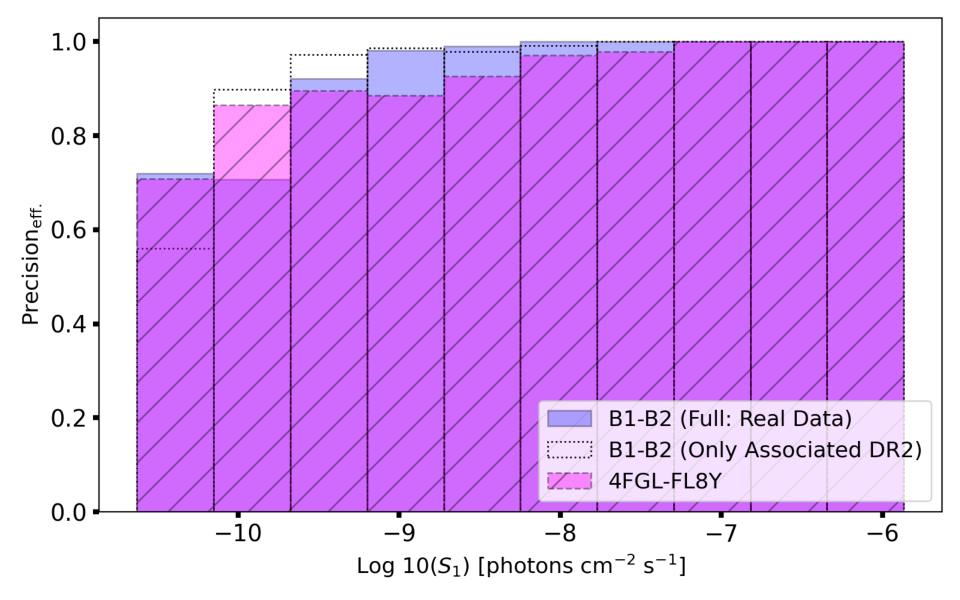
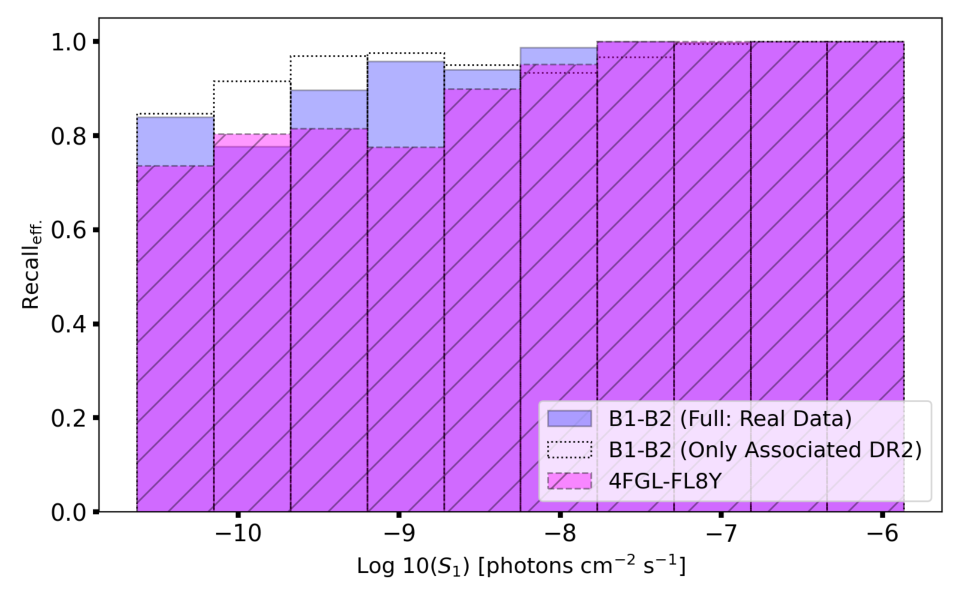
图注：与图7相同，但这里将B1和B2模型应用于真实数据，结果以灰色柱表示；并与仅限已关联DR2源时B1、B2之间的召回率比较（点线）。FGL与FL8Y之间的召回率以带斜线的洋红色柱表示。
怎么看这张图：比较相同流量箱中的背景切换稳定性。有效指标只衡量列表交集，共同漏检及共同伪源不在此图中显现；不能将灰柱高度直接解释为真实天空纯度。 真实数据背景模型鲁棒性是本文核心可检验主张。
来源与置信度：arXiv HTML；source verified；https://arxiv.org/html/2610.37287v1/B1-B2-real-assoc-FGL-FL8Y_pre.png；https://arxiv.org/html/2610.37287v1/B1-B2-real-assoc-FGL-FL8Y.png
图19
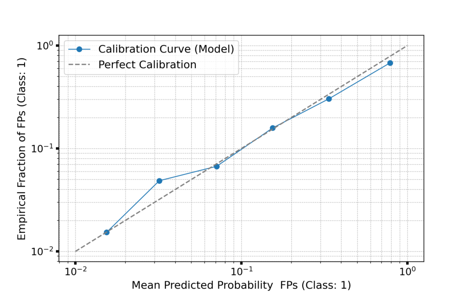
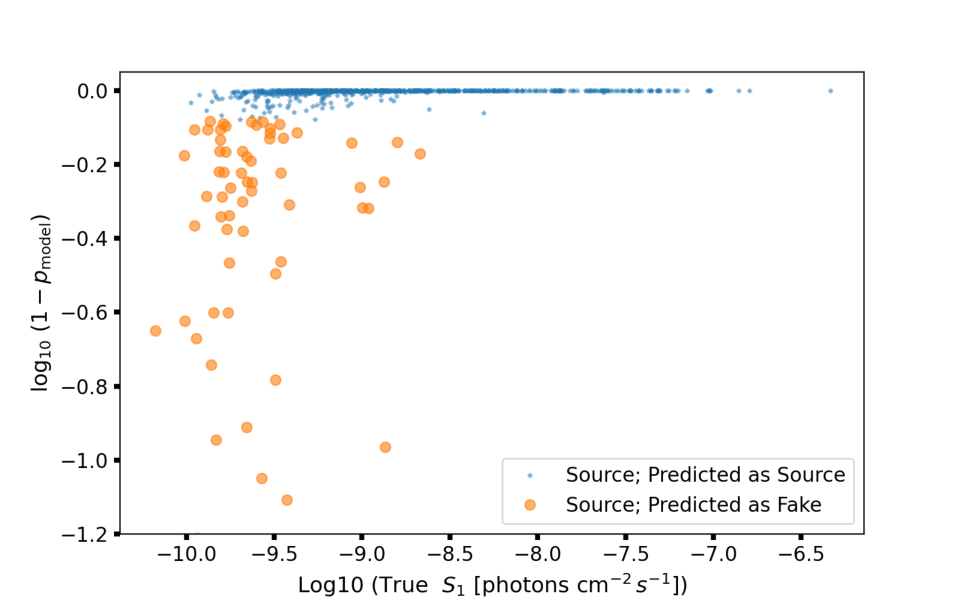
图注：左：全天伪源概率的校准曲线。蓝点表示各预测概率箱内的经验伪源比例FP/(FP+TP)，对角点线代表理想校准。右：log(1−\(p_model\))随真实源流量S1的变化，其中p_model为网络预测的伪源概率。正确分类的真阳性源聚集在零附近（蓝点），误分类的真阳性源用橙色表示。
怎么看这张图：先看左图概率与经验频率是否对应，再看右图低流量真源被拒绝的趋势。这是有真值模拟中的校准，跨到真实弥散结构时仍需额外验证。 区分分类概率、误报比例和检出显著性。
来源与置信度：arXiv HTML；source verified；https://arxiv.org/html/2610.37287v1/class_calibration_ALLvFAKE-1-Log-Log_AllSky.png；https://arxiv.org/html/2610.37287v1/Flux-Class-1-Prob-Train_HighLat_MoreData.png
强相关工作
Panes等2021年的ASID工作是直接方法前作：已有U形网络在模拟伽马天图中的点源识别验证。本文的增量在于能量依赖响应、更完整种群、三类候选后处理及真实全天应用；不能把U-Net本身说成本文新发明。关系依据本文引言及参考文献，链接用于回溯，未把前作引用当成独立性能复核。
4FGL是本文训练种群与对照的重要来源，它与1FDL使用重叠观测，双方一致不构成独立曝光上的新发现确认。U-Net原始论文提供像素分割结构，FL8Y/4FGL对比则帮助定义背景变化代理指标；这两种关联分别属于算法基础和实验基准，不能混为同源物理证据。
同一事件 / 同类源线索：
相似工作：
基础理论 / 方法工作：
相反观点 / 张力线索：
（未提供）
2. A microscopic analysis of shear acceleration in the relativistic regime
- 来源：arXiv / astro-ph.HE
- 链接：https://arxiv.org/abs/2610.36867
- 作者：Sophie Aerdker, Xingwei Gong, Martin Lemoine, Frank Rieger
- 公告 / 来源日期：2026-10-28
- 阅读层级：重点精读
- 评分：novelty 8/10，importance 8/10，relevance 9/10，final 9.35/10
- 推荐理由：协变微观散射揭示重尾等待及次扩散使局部剪切加速估计失效，推进喷流粒子输运物理。
中文题目：相对论喷流剪切加速的慢等待：微观输运揭示局域加速时间的失效边界
做了什么：剪切加速通常用局域动量扩散系数估计效率，隐含粒子持续采样同样的速度梯度。作者建立随流参考系中的协变微观动力学，并把角向随机散射写成随机微分方程，逐条追踪粒子在相对论速度剖面中的位置、动量与实验室时间。模型在小步长、均匀剪切极限恢复标准Fokker–Planck结果；允许粒子自由离开强剪切区后，谱却更软且持续随时间演化。
原因不是剪切层内加速失灵，而是外区的弱有效剪切与相对论像差共同拉长返回时间。无限四速度线性剖面的一个强剪切算例给出等待时间尾部约为t的−1.27次幂，连续时间随机游走模型可重现晚时谱。有限喷流的逃逸会截断长等待；动量相关散射还可在渐变与非渐变之间产生谱折转。这些是受控输运模型的结果，并未测得某个实际喷流的宇宙线最高能量。
为什么重要：本文提醒高能粒子模型不能只在加速最强位置比较加速与冷却时间。若粒子大部分时间停留在低效区，局域快加速仍可对应整体慢演化。它提供了从粒子轨迹到返回时间统计再到粒子谱的机制链，为判断剪切是否能供给超高能宇宙线或高能电子提供更严格的检查框架；但没有排除剪切加速本身。
理论 / 观测 / 仪器方法价值：可复用的是同时追踪空间、共动动量和实验室时间的方法，以及用等待时间分布检验把空间输运压成单区动量扩散是否合理。对于耀变体和射电星系的喷流模型，应先检查粒子是否反复穿越加速层，再判断是否可使用局域扩散近似。扩展至各向异性散射、真实磁场和冷却仍需要新增物理，不是替换一个谱指数即可。
为什么应该关注：IACT能谱中的硬化未必都由新的注入成分或冷却转折造成；本文展示了散射平均自由程达到剪切宽度时的另一种可能。不过它尚未计算具体伽马辐射，也没有对观测拟合。读者可把返回时间、边界逃逸和动量依赖散射列入模型诊断，待具备喷流速度/磁场结构及多波段时间约束时再检验，而不是直接把文中幂律尾指数当作普适参数。
展开详细解读：文章讲解、背景、理论、重点章节、图表与相关工作
文章详细讲解
科学问题：经典剪切加速把相邻流层中的弹性散射转化为粒子平均增能。在局域扩散近似中，较长散射时间可以增加每次采样的速度差，从而缩短加速时间。但粒子同时会走到别处；对于相对论非均匀流，那里可能梯度较弱、横向返回也更慢，局域估计是否仍代表整体就成为核心问题。
作者怎么做：在局部共动标架中写动量与方向余弦演化，散射保持方向向量归一，并逐步变换回实验室系。先把每步粒子重置到原位做均匀剪切基准，再释放空间运动；随后提高散射时间跨过小增益近似的边界。最后把无限四速度线性层改成带反射与自由逃逸边界的有限喷流，检验结论对理想化几何的敏感性。
关键结果：同一初始弱剪切设置中，释放空间输运会使谱比均匀基准软，强剪切轨迹则显示快速增能与长停顿交替。图7的等待分布尾部约为t的−1.27次幂，图8运行扩散系数随时间下降；以这些等待统计加权加速传播核，可重现图4中的谱演化。动量相关散射算例在约10倍注入动量附近变硬。
局限和下一步：长尾指数依赖速度剖面、边界和粗粒化定义，并非所有喷流通用。无限流的平均等待时间问题不能直接移到有限喷流；有限逃逸会截断尾部并形成准稳态。模型预设散射而未自洽生成湍流，电子辐射冷却也未加入，下一步需结合MHD/动力学速度与磁场剖面才能讨论实际源的能谱或最大能量。
关键结果是怎么做出来的
第一层验证是已知极限。作者用小的散射时间和每步重置位置，使粒子总处于近似恒定剪切率；图2逐渐恢复连续注入条件下n(p)正比于p的−1次幂。这里n是按动量计的粒子谱，不是相空间分布f，后者多出p平方的测度，不能把两个指数混用。
第二层只改变空间自由度。图3允许同样粒子游走，中心以外的有效剪切变弱，实验室系横向运动又受像差抑制；谱软化并持续演化。文中的1250个时间单位与局域共动390个单位只是不同时间口径下的示例，作者也明确指出参考系差异，所以不能把比值解释成精确的效率压低因子。
第三层进入非渐变区。图5、6直接显示粒子穿层时动量跳变、远离层时长时间近乎不变。此时把小步长公式外推给出的约一个时间单位与模拟的约830单位比较，只能警示外推失败；前者已离开Fokker–Planck适用域，后者又按实验室时间测量，不能当作严格测定的830倍修正。
第四层从轨迹提取统计。图7在两次穿过最强剪切位置之间计等待时间，拟合重尾指数并与图8的随时间扩散诊断相互验证。两状态随机游走把层内有效增能和层外等待分开，使用来自模拟的尾指数及有效加速率复现谱，因此是机制归纳与数值一致性检验，不是无调参独立预测。
第五层改变散射律和边界。散射时间随动量增长时，粒子逐渐跨入大速度差采样区，图10产生硬化。有限喷流中反射内边界和自由逃逸外边界改变返回次数，图12在约500个时间单位后近似稳定。注入遍及全域还会留下未加速逃逸峰，说明谱形同时携带注入、驻留和逃逸的信息。
展开背景、理论、公式、模型和章节导读
背景知识
喷流不同横向位置的流速并不相同，粒子在磁场扰动散射下跨越这些流层，连续进入不同局部共动系。在每个共动系里散射可以近似弹性，但回到统一参考系时能量发生变化，流体有序运动的能量因而可转移给非热粒子。这就是剪切加速的基本能量来源。
渐变剪切指一个散射平均自由程内速度变化很小，许多微小增益可用动量扩散描述。非渐变情形则在一次行程中看到明显速度差，动量跳跃不再小，低阶扩散近似可能失去代表性。两者由散射时间与局域剪切率的乘积判断，而不只由喷流整体洛伦兹因子决定。
相对论像差使在共动系近似各向同性的粒子，在实验室系更偏向沿流方向运动。对横穿喷流而言，这意味着相同散射物理不再对应相同的实验室返回速度。即使粒子本身始终超相对论，它在横向方向上的输运仍可能很慢，不能把粒子速度近光速等同迅速回到加速层。
通常的随机游走假设短而可平均的等待时间。若等待分布有足够重的长尾，少量很长的离层行程会强烈影响总体时钟，标准“每单位时间等量扩散”不再成立。天体系统的有限大小和寿命会改变尾部，所以重尾模型必须与实际边界一起使用，不能由无限系统的数学极限直接推出天体结论。
基础理论 / 方法脉络
首先区分三速度与四速度。线性的四速度剖面在实验室三速度中并非无限增长，而是逐渐趋向光速；共动剪切率还带洛伦兹因子。因此本文所谓强剪切中心与外区的对比来自所选剖面，指数型等其他剖面可能改变这一空间分布，不能把中心最有效当所有喷流定律。
动量变化与方向余弦乘积有关，单条粒子轨迹既可增能也可失能。随机散射不断改变方向，经过统计平均才出现扩散与漂移。把位置固定的基准结果与真实空间行走分开，可以判断差异是数值实现错误还是粒子实际经历的剪切历史改变。
三个方向余弦只有两个独立自由度，作者用俯仰角与人工方位角随机过程保持单位长度。这样避免独立给三个分量加噪声导致非物理方向矢量。这里采用共动各向同性散射，意味着平均磁场对横向/纵向输运的限制未被完整建模，是未来推广的重要边界。
连续时间随机游走把粒子历史写成层内加速段与层外等待段。层内可用有效动量传播核，层外则由返回时间分布决定何时开始下一次加速。它保留了单区扩散被平均掉的时钟信息，同时仍是粗粒化描述；加速区域宽度不同会稍改尾指数及有效参数。
公式与推导
为避免量纲混淆，定义无量纲流四速度\(U=\gamma_J v_J/c\)，令\(L_0\)为长度单位、\(\tau_0=L_0/c\)。下列前四式对应正文微观模型与小步长极限，其后的积分与转折标度是基于论文的教学说明。
\(\sigma\)的单位为时间倒数。若\(U=U_0+\tilde\sigma x/c\)，则\(\sigma=\tilde\sigma/\gamma_J\)，外区大洛伦兹因子降低局域有效剪切。这一步把几何剖面连到粒子实际受力。
共动动量\(p'\)及方向余弦\(\mu_i'\)满足正文式1：
单次能量变化正负取决于方向；散射使方向相关逐渐丢失。仅在\(\sigma\tau'\ll1\)、方向近似各向同性等条件下，用\(\langle\mu_x'^2\mu_z'^2\rangle=1/15\)得到
它的量纲为动量平方除时间，描述局域而非整个喷流的扩散。如果\(\tau'\propto p'^\delta\)，球对称动量测度产生的平均漂移为
这说明较长平均自由程在渐变极限下为何加速更快，也同时给出外推警戒线：乘积接近一时，推导中的小增益前提已不成立。
对于强剪切算例，正文测得返回等待分布尾部
若理想尾部一直延续到无穷，其一阶矩满足
在\(0<\alpha<1\)时发散。实际模拟时长和有限喷流会截断尾部；“无有限均值”只属于该无限尾模型，不意味着真实粒子永远无法返回。
正文式13将谱写成按加速次数加权的传播核之和：
\(P_n\)由返回等待统计决定，\(G\)是层内有效加速传播核，\(\Delta t\)为一次层内驻留尺度。整体慢演化因此可与层内快速增能共存；两者不能用一个固定局域时钟替换。
最后，若\(\tau'=\tau'_0(p'/p'_0)^\delta\)，令\(\sigma\tau'\sim1\)可得到教学转折尺度
对\(\delta=1\)、代表性\(\sigma\tau'_0\sim0.1\)给出约10，与文中算例吻合；但真实谱斜率还由空间路径、逃逸和冷却决定，不能仅从这一尺度预测光子谱。
模型拟合 / 应用方法
本文不是观测参数拟合，而是微观轨迹模拟、已知极限校准和粗粒化谱描述。先在每步重置位置的特殊试验中检验Fokker–Planck渐近谱，再移除该人为限制。基准只是数值验证工具，不能把这种重置规则当成真实喷流中的粒子行为。
弱剪切例使用初始三速度0.2c、四速度梯度0.1c/L0和散射时间τ0；强剪切例改为0.8c、0.6c/L0和10τ0。每条轨迹有自己的共动时钟，输出谱按统一实验室时刻比较。解释图中时间尺度和能谱时必须同时标明参考系，实验室谱近注入位置的硬化部分来自洛伦兹变换。
等待指数由两次穿过最强剪切位置之间的间隔拟合；连续时间随机游走再采用约50τ0的层内驻留和有效增能率重现晚时谱。层宽在合理范围调整仍能拟合，但指数会变化。因此该模型说明机制相容，未给唯一参数后验，更不是一次观测独立测出的Lévy指数。
有限喷流使用平滑速度过渡、内侧反射和外侧自由逃逸，注入遍布整个域。这套边界产生与无限中心注入不同的谱和未加速峰。模型没有报告真实源拟合的χ平方、显著性或置信区间，本解读也不补造；验证重点是数值极限、轨迹统计、谱随边界变化和物理条件。
迁移到实际源时，应先引入空间变化的湍流/磁场及损失项，再比较粒子返回、冷却和逃逸时间的分布。把单一平均冷却时间同中心局域加速时间相交，可能遗漏长等待期间的损失。需要计算辐射输运与观测选择之后，才可将预测同IACT能谱或时变数据做统计检验。
重点章节 / 结果段落怎么读
-
第II节式1至9及图1：先区分四速度线性与三速度线性，再读方向散射如何维持单位矢量。
-
第III.1至III.2节图2、3：只改变空间自由度的对照是全文机制起点，注意粒子谱n与分布f的区别。
-
第III.3节图5至8：从单粒子停顿走到等待统计，再核运行扩散系数；不要只看局域加速时间数字。
-
式11至13：理解随机游走参数来自模拟归纳，而非新增普适常数。
-
第IV节图10至12：逐一检查动量相关散射、有限逃逸、注入位置对谱折转与稳态的影响。
关键图表与解读
图5
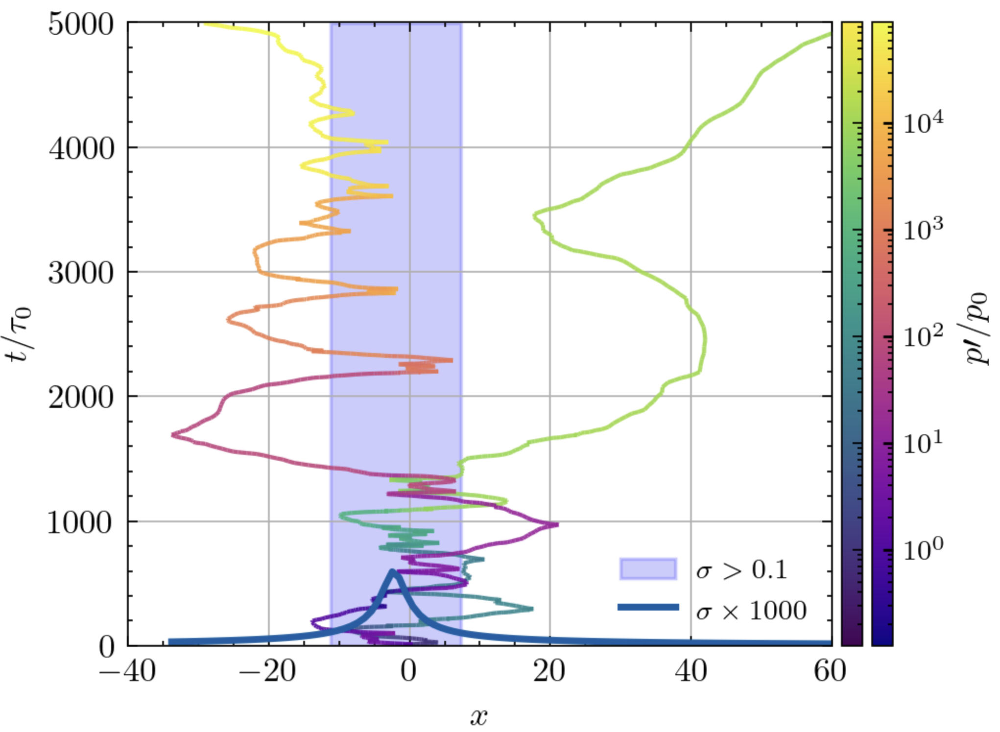
图注：强剪切算例中两粒子沿剪切方向x随时间的示例轨迹，参数为β0=0.8、σ̃=0.6c/L0、τ′=10τ0。作为对照同时给出σ=σ̃/γ(x)的剖面，阴影表示σ>0.1c/L0的显著剪切区。颜色追踪共动动量p′/p0。粒子在剪切层中通常增能，离开后动量近似不变。请注意纵轴与横轴的尺度不同。
怎么看这张图：沿轨迹追踪颜色变化，增能集中在阴影层内，外部较长路段的颜色停滞对应等待。图展示两条示例，整体统计还需结合图7、8。 直观说明局域加速快与整体等待慢为何并存。
来源与置信度：arXiv HTML；source verified；https://arxiv.org/html/2610.36867v1/example_traj_comb.png
图7
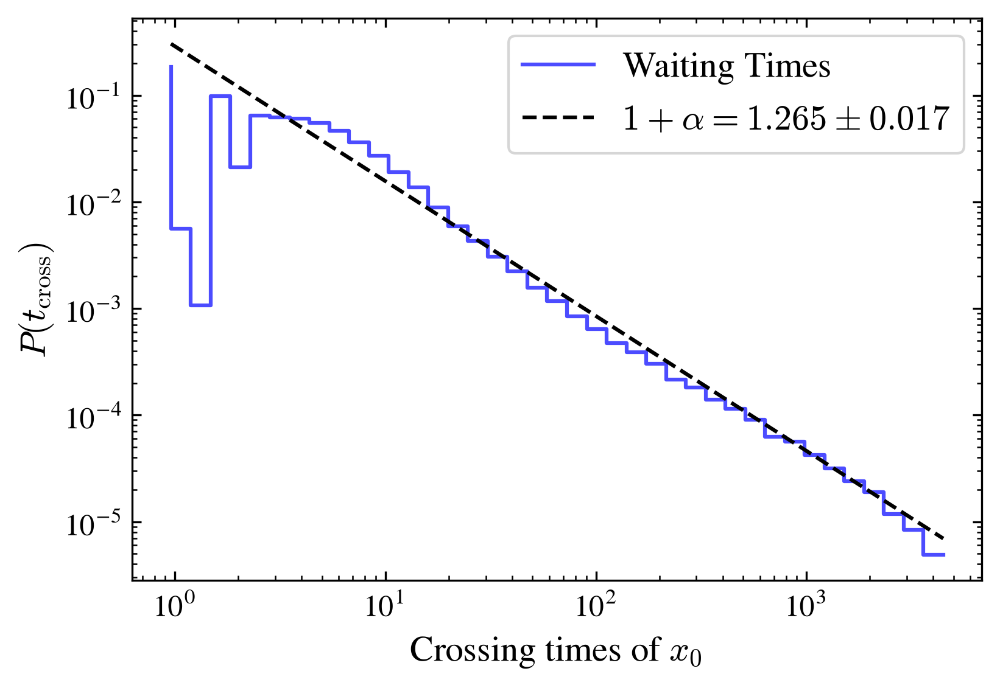
图注：从β0=0.8、σ̃=0.6c/L0的模拟中提取的两次穿过x0之间的等待时间分布。其幂律斜率可拟合为−(1+α)≈−1.27。
怎么看这张图：关注长时间尾部，而非只看峰值。该指数属于此无限剖面算例；有限喷流逃逸会截断长尾，不能直接用于所有实际源。 返回时间统计连接微观轨迹与次扩散解释。
来源与置信度：arXiv HTML；source verified；https://arxiv.org/html/2610.36867v1/wtd.png
强相关工作
Rieger与Duffy2006年的微观剪切加速以及2019年的综述给出渐变剪切、各向同性散射下的动量扩散基线。本文在适用极限重现它，并没有推翻所有输运理论；其贡献在于保留空间路径和相对论参考系，使局域近似何时不足变得可检查。相关关系依据本文第I至III节的实际引用。
Lemoine2019年的广义Fermi描述提供协变框架；Webb等的相对论空间—动量输运理论本就能包含空间扩散和非均匀剪切。本文强调的是把全部空间依赖压成局域单区系数时会遗漏返回时钟，不能误写成此前理论从未考虑空间。对有限边界的前作比较仍需保持流场和散射算符可比，本文给出的斜率对照并非所有模型的直接优劣排序。
同一事件 / 同类源线索：
（未提供）
相似工作：
基础理论 / 方法工作：
相反观点 / 张力线索：
（未提供）
3. Coherent Radio Emission from Flux Rope Mergers in 3D Relativistic Reconnection
- 来源：arXiv / astro-ph.HE
- 链接：https://arxiv.org/abs/2610.37214
- 作者：Jasmine Parsons, Lorenzo Sironi, Anatoly Spitkovsky, Alexander Chernoglazov
- 公告 / 来源日期：2026-10-28
- 阅读层级：重点精读
- 评分：novelty 8/10，importance 8/10，relevance 9/10，final 9.35/10
- 推荐理由：三维PIC首次验证磁通绳合并的逃逸相干波效率及偏振，检验二维机制能否存活的关键步骤。
中文题目：三维磁重联仍能发出相干射电波：磁通绳合并效率与偏振的动力学检验
做了什么：磁重联电流片中的磁岛合并可激发相干射电波，是Crab类脉冲星外磁层射电辐射及部分快速射电暴模型的候选机制。但二维模拟限制了磁结构的扭曲方式，周期边界又容易迫使磁岛相撞。作者用电子—正电子等离子体三维粒子网格模拟，开放流出方向并扫描三个导引场强度，直接测量离开电流片的波动坡印廷通量。
无导引场时，入流磁能转为逃逸相干波的效率约7×10⁻⁴；导引场与重联场之比为0.1和0.3时分别约2×10⁻³和10⁻³，仍与既有二维结果同量级。逃逸波为线偏振X模，偏振由上游磁场决定，两侧差约为2 arctan(Bg/B0)。这验证了机制在所测三维条件下仍能工作，却没有给出真实Crab或FRB完整光变拟合；模拟内很小的偏振波动也无法直接解释观测中的大幅快速摆动。
为什么重要：从二维推广到三维是机制可信性的实质检验：三维扭曲可以破坏相干结构，开放边界可让结构未合并就逃走。本文仍得到可观逃逸波，排除了“这种发射完全依赖二维周期箱”的简单质疑。同时它提出排出磁通束互锁导致局部减速、持续供给合并的物理图像，为为何效率未大幅下降给出可追踪的动力学原因。
理论 / 观测 / 仪器方法价值：方法价值在于把稳态磁能入流与传播出去的波动通量分开归一，并在远离电流片的平面测量，而非把片内磁能耗散全部算成可见射电。偏振还受等离子体传播截止筛选，说明发射位置的电流方向并不独自决定远方可见模式。对高能磁层建模，应同时检查能量通道、逃逸条件及观测几何。
为什么应该关注：Crab射电与高能脉冲的相位联系使外磁层机制值得关注，但本文模拟的是局部相干波，不能推出TeV辐射也由同一微观过程直接产生。它可帮助构建跨波段模型的边界：哪些偏振行为可由电流片局部结构解释，哪些还需要全局风、相对论像差和传播效应。作者关于FRB或并合前射电瞬变的推广保留为待验证机制。
展开详细解读：文章讲解、背景、理论、重点章节、图表与相关工作
文章详细讲解
科学问题：二维磁岛合并能产生快磁声波，但三维漂移扭结和磁通绳扭结会降低沿电流方向的相干性。若开放边界让绳结构直接离开，合并次数也可能下降。作者因此问，三维现实自由度会不会把此前预测的相干射电效率压到不可用，以及波的偏振是否随紊乱结构一起随机化。
作者怎么做：使用TRISTAN-MP在磁化度10的冷电子对等离子体中模拟Harris电流片；流出x方向开放、电流z方向周期，y方向移动注入新磁通。三个导引场比值为0、0.1、0.3。跳过初始瞬态，在充分发展的后两个跨箱时间里，在片两侧平面分别测能流和偏振，并去掉靠近流出边缘的区域。
关键结果：三种设置都出现向上游逃逸的相干波。无导引场效率低于二维约二至三倍，中等导引场恢复到千分之一量级。作者观察到偏离中心的扩散区排出磁通束与主流相遇、局部互锁减速，新生磁通绳因此不断追上并合并。逃逸模式的偏振近乎固定，由上游场方向而非随机合并倾角控制。
局限和下一步：效率不是总磁能耗散比例，也不是观测射电光度占自转能损率的比例。三维重联率约0.05至0.07，低于常用二维0.1，因此效率相近不保证绝对波功率相同。模拟尚无辐射冷却，导引场也未超过0.3；大幅偏振摆动、真实频率和脉冲包络需结合全局磁层与传播，作者提出的微爆发寿命解释仍待更大模拟。
关键结果是怎么做出来的
第一步明确实验对象。上游温度为mc²的10⁻⁴量级、磁化度为10，使用电子对等离子体而非离子主导喷流。箱体横向尺度、每胞宏粒子和皮肤深度分辨率都是具体数值选择；该结果应称对一组受控参数的三维检验，而不是已覆盖所有磁层条件。
第二步隔离逃逸波。图1、2中弧状波前离开电流片，作者在距片约500个皮肤深度处测坡印廷通量，并把场分成时间平均与波动部分。稳态入流用平均电场和重联磁场定义，波功率用波动叉乘定义，两侧按向外方向统一符号。移动注入器的平面条纹经改变注入设置检查未主导测量。
第三步比较效率而非只看动画。图3给出重联率与η随时间，两者归一分母取每个算例实际入流。波效率随机起伏数倍，移动测量平面或改变平均时间最多造成约因子二变化，较远平面可能漏掉从x开放边界逸出的准球面波。三个平均值因而是模型量级，不是带精密观测误差的常数。
第四步追踪三维磁拓扑。图4同时显示排出速度、密度、磁力线和扩散区，说明两束反向排出磁通互锁后减速。该停滞结构位于扩散区之间，能不断接收新磁通绳并合并，是作者解释持续辐射的机制。它属于数值轨迹支持的物理图像，尚未给出独立统计预测所有结构寿命的公式。
第五步检查可传播模式。图5亮区的电矢量在每一侧几乎同向。冷磁化电子对等离子体中，低于等离子频率的O模不能传播，而相应X模可作为快磁声波离开。导引场改变两侧上游方向，遂给出确定的偏振角差；这解释局部两侧差异，却不等同观察者在一个脉冲中必然依次看到两侧。
展开背景、理论、公式、模型和章节导读
背景知识
相干射电发射要求大量电荷的辐射在相位上有组织，不能仅靠增加普通单粒子同步辐射数目来达到极高亮温。脉冲星纳秒子脉冲和FRB因此长期推动集体等离子体机制研究。磁通绳合并激发的宏观电流变化提供一种候选集体源，但并非所有射电发射都来自电流片。
磁重联将反向磁场连接关系改变，把磁能释放给粒子、流体和波。撕裂不稳定会使电流片破碎，二维中形成磁岛，三维中对应沿电流方向延伸并可扭曲的磁通绳。相干波能量只占入流磁能的一小部分，其他耗散通道不能省略。
导引场是电流方向上不发生反向的磁场分量。它既影响扭结稳定性，也改变重联磁力线两端的空间指向。本文展示，即使导引场只占重联场一小部分，也可让排出磁通束在第三维相遇，因此三维效应不只是对二维结果乘一个衰减因子。
观测到的偏振由发射、可传播模式和沿途演化共同决定。在稀疏磁层里，电矢量可能随局部磁场绝热转动，直到偏振冻结半径才固定；也可能在不满足绝热条件时更早保留源区方向。因此局部模拟预测的角差须经过几何与传播映射，不能直接倒推出一颗星的导引场。
基础理论 / 方法脉络
模拟以Harris反向场建立剪切电流层，磁化度衡量重联场能密度相对粒子静质量能密度。上游冷而强磁化时，磁张力能迅速驱动排出，并支持快磁声扰动。这是本文采用电子对PIC处理微观电流和波产生的原因，流体模型很难自行给出相干发射细节。
坡印廷矢量描述电磁能流。其总y分量同时含向片内输入的平均能流与向外传播的波动，方向甚至相反。先分解平均场再取波动叉乘，才能让η对应逃逸相干波；直接把总能流绝对值积分会把输入也算成输出。
效率比较须固定分母意义。本文分母是参与重联的磁场分量的入流功率，随实际重联率改变。相同η乘上较低重联率，仍给出较小总波功率；导引场比0.1与0.3的效率也并非单调上升，因此不能外推“导引场越大越亮”。
冷电子对等离子体对两种偏振模式的色散不同。合并尺度大于皮肤深度使典型波频低于等离子频率，O模受截止抑制，X模仍可沿上游逃逸。观察到相对稳定的偏振因而可能来自传播筛选，而不是要求每次三维合并具有完全相同几何。
公式与推导
以下式1、2直接来自正文，其余为正文定义与模式传播推理的连续整理；最后的数值角度是教学代入。
\(\Delta\)是电流片半厚度，\(n_0\)按论文对两种粒子的总密度约定。磁化度无量纲，限定了本次算例的物理区域；改变它不一定保持相同效率。
总能流的y分量是
在高斯单位下它是单位面积、单位时间的能量。将场写为\(E_i=\langle E_i\rangle+\delta E_i\)及对应磁场，稳态入流和波动能流分别定义为
下侧平面的输出符号需翻转，才能统一向外为正。平均时段在初始瞬态以后，避免把启动过程当持续辐射。
由两类能流的比值，论文式2得到
这是无量纲效率，经过平面、时间和两侧平均。对固定重联场和有效面积A，教学上可写\(P_{\rm wave}\sim A\eta\beta_{\rm rec}cB_0^2/(4\pi)\)，所以η相等并不意味着绝对输出相等。
接着检查发射能否离开。正文讨论的冷等离子体O模满足
若\(\omega<\omega_p\)，实传播波数不存在。最小磁通绳尺度为数倍皮肤深度，取\(\ell\sim\zeta c/\omega_p\)便有
这是数量级关系而非精确频谱拟合；在此条件下O模受抑，而X模可作为快磁声波传播。实际磁层密度逐渐降低后，波才能进一步转为自由电磁波。
X模电矢量垂直于上游场，上下两侧重联场反向但导引场不反向，因此相对于共同轴的局部角差为
代入0.1和0.3，分别约11.4度与33.4度。它是两侧局部出射角差，不是单侧随机变化幅度，也不是尚未经过相对论与传播变换的观测角度。
模型拟合 / 应用方法
本研究没有拟合天文观测，而是在固定磁化度和三个导引场配置下做动力学实验。皮肤深度用2.5个网格解析，x方向总长1600个皮肤深度，z方向816；未加入辐射冷却。报告这些条件是为了限定可比范围，并不意味着目前已完成所有分辨率和参数空间的收敛证明。
测量窗口选在ct/L约5.2至7.2，效率平面距片约500个皮肤深度，偏振平面约640；x边缘80个皮肤深度被排除。不同距离会改变从开放边界提前逃走的波能，因此平均效率有几何系统性。作者做了平面、时间窗及注入器检查，变化量级保留为约因子二。
图3的η起伏反映合并事件的间歇性，不应把曲线散布当观测置信区间。重联率在所用窗口较稳定，故瞬时或时间平均入流归一的差异较小；跨维度比较仍须乘上实际重联率，才谈固定场强下的输出功率。
偏振分析只在亮波包上测振荡电矢量，与局部上游场比较。每侧角度散布仅几度，作者据此认为源区合并紊乱本身不足以产生Crab纳秒级数十度摆动。改变传播或全局几何是作者提出的下一步，而非本模拟已经验证的解释。
若要联系具体FRB，应补充磁星风压缩条件、密度和场强尺度、观察者方向以及偏振沿途演化，再前向计算频谱与脉冲时长。文中预期强导引场降低撕裂、冷却可能改变绳尺寸与频率，都尚待三维算例检验，不能把这类展望写成已测定趋势。
重点章节 / 结果段落怎么读
-
第I至II节：先看二维周期边界的局限，再逐项核对三维边界、磁化度与测量时段，建立实验可比范围。
-
第III.1节式1、2和图3：区分总能流、入流与逃逸波；确认效率与绝对功率的不同分母。
-
第III.2节图4：交替看排出速度与密度图，跟踪来自不同扩散区的磁力线为何互锁并减速。
-
第III.3节图5：将O/X模截止论证和偏振箭头对照，理解偏振稳定来自哪一步筛选。
-
第IV节：对照Crab/FRB的角度摆动与模拟小散布，区分机制生存的支持证据和仍未解决的观测问题。
关键图表与解读
图3
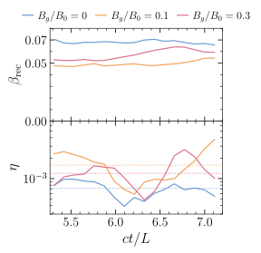
图注：重联率（上）以及将入流坡印廷通量转为向外逃逸相干波的效率（下）随时间的变化。Bg/B0分别为0、0.1、0.3的三个模拟依次用蓝色、橙色和洋红色表示。重联率和效率均在距电流片约500c/ωp的两个x–z平面上测量，并对两个平面平均。下图点线表示整个时间区间的平均效率。
怎么看这张图：先比较上图实际重联率，再看下图η。中等导引场η接近二维不代表波总功率相同，因为功率还正比于重联率；曲线起伏来自合并间歇性，不是观测误差棒。 直接支撑三维仍有相干逃逸能流的核心结果。
来源与置信度：arXiv HTML；source verified；https://arxiv.org/html/2610.37214v1/rate_efficiency.svg
图5
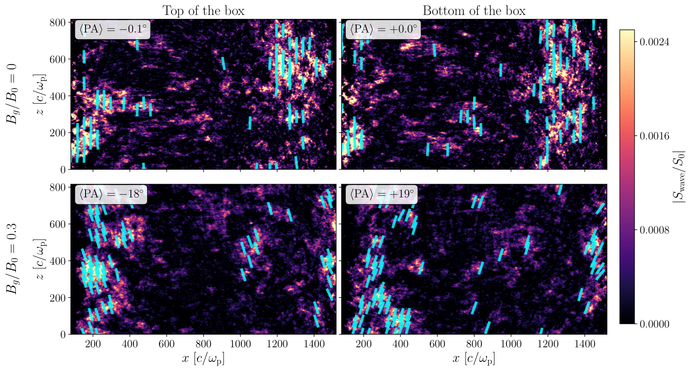
图注：ct/L=5.6时出射波的偏振角：上排Bg/B0=0，下排Bg/B0=0.3。四幅图给出距电流片约640c/ωp、靠近箱顶（左列）和箱底（右列）的x–z切面，显示以入流通量S0归一的相干波向外坡印廷通量。黄紫色区域为高强度波包；浅蓝短线表示其中振荡电矢量方向，它与z轴的夹角即偏振角。无导引场时两侧电场均沿z轴；Bg/B0=0.3时，出射偏振由上游场方向决定，两侧角差约为2 arctan(Bg/B0)。
怎么看这张图：比较每侧短线是否一致，再比较上下游两侧整体转角。局部两侧角差是几何预测，并未包含远方观察者的风传播和像差；不能直接拿它拟合单个FRB的整段偏振摆动。 展示稳定X模偏振及导引场两侧差异的证据。
来源与置信度：arXiv HTML；source verified；https://arxiv.org/html/2610.37214v1/fig-3-equal-distance.png
强相关工作
Philippov等2019年的二维重联研究将Crab纳秒射电子脉冲同磁岛合并联系起来，Lyubarsky2019年提供外磁层射电机制框架。本文实际检验的是该机制在三维扭曲和开放流出下是否还能输出相干波，结果提供支持但并未独立拟合Crab观测。关系来自本稿引言、效率比较及参考文献。
Mahlmann等2022年讨论压缩磁星风中快速重联产生FRB，属于同类机制在另一驱动环境中的应用。本文温和导引场扫描增加其可行性线索，但没有模拟那种低频磁脉冲驱动的全局系统。作者对并合前射电瞬变的联系也是机制迁移，而不是已检出伴随信号；与激波相干发射的区别则体现在波频和可逃逸偏振模式的条件。
同一事件 / 同类源线索：
（未提供）
相似工作：
基础理论 / 方法工作：
相反观点 / 张力线索：
（未提供）
4. Three-flavor neutrino Boltzmann transport and flavor instabilities in long-lived neutron-star merger remnants
- 来源：arXiv / astro-ph.HE
- 链接：https://arxiv.org/abs/2610.36486
- 作者：Harry Ho-Yin Ng, Jiabao Liu, Arthur Offermans, Shoichi Yamada, Elias R. Most, Luciano Rezzolla
- 公告 / 来源日期：2026-10-28
- 阅读层级：重点精读
- 评分：novelty 8/10，importance 8/10，relevance 8/10，final 9.00/10
- 推荐理由：含缪子三味Boltzmann输运与非线性味演化揭示碰撞再填充的重要性，有明确模型纠偏。
中文题目：把缪子纳入并合后中微子输运：三味耦合为何改变不稳定性与最终布居
做了什么：双中子星并合遗迹中，缪子的产生与衰变打破μ味和τ味中微子的等价性，传统两味近似可能遗漏转换通道。作者把三维灰M1并合模型在并合后30毫秒交接给轴对称广义相对论Boltzmann求解器，包含六种中微子及完整缪子反应，先固定物质松弛2毫秒，再演化8毫秒。随后用实际角分布诊断快速和碰撞味不稳定性，并在三个代表点求解局部三味量子动理学。
去缪子化产生的νμ过量使部分味对的角分布不再交叉，反而抑制其快速不稳定性；碰撞不稳定性则广泛存在于三个味对。局部非线性演化中，最初稳定的第三味对也能被另外两对激活，且保留对角碰撞源后并不趋于简单三味均分。全局量子反馈、外流成分和核合成尚未自洽计算；这里证明的是三味与碰撞补充源不能随意拆开，而非给出完整并合预言。
为什么重要：味转换改变电子味中微子可用来加热物质、改变中子质子比的能谱，因此可能影响并合外流和重元素形成。本文的推进在于用分辨角分布的六物种输运建立三味背景，再验证线性独立味对在非线性阶段会耦合。它同时给出一个反直觉结果：加入新反应不必增强全部不稳定性，角分布符号与驱动相对阻尼才决定是否增长。
理论 / 观测 / 仪器方法价值：可借鉴的是多层模型的明确接口：全局经典输运负责物质与能角分布，稳定性分析找出可能增长区域，局部量子计算测试转换和碰撞再填充共同决定的终态。作者还检验稀薄区缪子化学势数值底限与碰撞求解器，避免把表格外插造成的虚假中微子发射误当物理。每一层的验证范围应分别保留。
为什么应该关注：对天体中微子研究，这不是高能望远镜的一项新探测，而是MeV致密天体源区味演化的基础问题。若将其接入全局模拟，应替换相应经典碰撞更新以避免双计，并保留有限松弛时间。不能只依据一张线性增长率图，立即把所有味均分，再宣称获得了可靠的观测信号或核合成收益。
展开详细解读：文章讲解、背景、理论、重点章节、图表与相关工作
文章详细讲解
科学问题：高温并合遗迹中μ子使νμ与ντ的反应率和布居不同。两味模型因此可能漏掉相互耦合的不稳定通道；与此同时，碰撞既能驱动相干增长，又能改变对角布居，能否把两者独立处理也并不清楚。
作者怎么做：对总质量2.5太阳质量、无初始磁场的长寿命遗迹，采用DD2状态方程及六物种能角分辨输运，并与无μ子的模型比较。对角平均背景计算碰撞不稳定性，对方向分布检查快速味交叉，再固定三个局部点的物质条件，对比完整碰撞、仅非对角阻尼及纯经典碰撞三种量子方程处理。
关键结果：μ子反应把快速不稳定主要保留在eτ味对并改变其空间形态；另外两对因νμ过量导致符号单侧而受抑。碰撞不稳定在多个味对共存，非线性哈密顿量把最初稳定的第三对也激活。包含碰撞再填充时，τ味终态偏离经典平衡，且与去掉对角碰撞后接近均分的结果不同。
局限和下一步：全局模拟没有量子转换反馈；局部模型空间均匀、各向同性，忽略快速不稳定及其重分布，采用简化碰撞算子。极薄共振层峰值未充分分辨，快速不稳定形态对空间和角分辨率敏感。下一步需要核反应率进入量子碰撞算子、三维全局反馈以及并合早期μ子化阶段的检验。
关键结果是怎么做出来的
第一步建立可用的三味背景。30毫秒交接后，旧M1辐射场被清空并在固定物质上重新松弛，避免把闭合近似的角分布直接用于稳定性判断。38毫秒时大体物质结构相近，但含μ子盘经历更强去μ子化，改变了νμ与反νμ的相对数目，这正是味对对称性失效的物理来源。
第二步把两种不稳定分开。图3的碰撞增长广泛出现，τ味能量球内的热化区受到抑制；图5、6则显示快速不稳定依赖角分布交叉。eμ和μτ的正负角积分中有一支接近零，不能仅凭中微子数多就断定快速增长。
第三步识别增长率的可信范围。窄共振型碰撞层出现很大估计增长率，但厚度和峰值未充分分辨。附录D在33毫秒比较75、150、300米及多种角网格，普通碰撞区域相对稳健，快速不稳定向盘外和极区的延伸仍明显改变。这些不是可当作精确预测的收敛地图。
第四步看局部非线性演化。图8以初始总数归一，完整碰撞允许总中微子数改变；因此灰色三分之一线只对无对角碰撞的均分解释直接成立。图9表明第三味对可被已有相干项相乘激活，独立求解三个两味系统无法重现这一过程。
第五步检查时间尺度。某些局部点τ味达到终态需要百微秒甚至更长，与遗迹局部动力学时间可比。固定背景中的渐近解不一定能在真实流体演化前达到，子网格模型需要有限时间演化和残余相干，不能仅查表读取瞬时均分终态。
展开背景、理论、公式、模型和章节导读
背景知识
中微子味指电子、μ子和τ子相关的弱相互作用通道，三味还各有反粒子。低温下μ子稀少，μ与τ味常被合并为重味；在热致密并合遗迹里，μ子丰度和带电流反应使这种合并不再可靠。引入六物种不是简单增加计数，而是改变不同味的发射、吸收和不对称性。
双中子星并合后可能留下短命或长寿命中子星与盘。辐射加热和电子分数影响外流的中子丰富程度，但动力学、核反应和味转换之间需要完整耦合。本文针对长寿命遗迹的一段晚期演化，不能自动推广至很快塌缩成黑洞的系统。
经典Boltzmann方程描述每一味在位置、能量和方向上的占据数；量子密度矩阵还包含味间相干。前者能够提供真实角分布，后者才描述相干转换。空间全局分辨与量子自由度同时求解代价极高，因此本文采取全局背景加局部量子试验。
快速味不稳定由中微子自相互作用与角分布交叉驱动，碰撞味不稳定则依赖味和粒子反粒子间不对称的碰撞效应。碰撞一方面阻尼相干，另一方面通过不对称性允许集体增长。两者的存在条件、增长时间和非线性终态不同，不能以“碰撞总会抹平振荡”概括。
基础理论 / 方法脉络
密度矩阵对角元是各味占据数，非对角元表示相干。自相互作用哈密顿量由整个中微子背景积分决定，因此一味的变化会反过来影响别的味。线性化时三对可分开求增长率，但完整矩阵对易子包含跨第三味的乘积，非线性时独立性不成立。
快速不稳定诊断先构造每一味的角分辨轻子数，再比较两味差。正负方向贡献同时存在意味着交叉，本文用其积分的几何平均估计增长；这不是对所有波矢求完整色散关系的最大增长率。交叉可随角网格变细才显露，解释了分辨率敏感性。
碰撞诊断将能谱差分的正负部分分开积分，以避免有符号平均相互抵消。有效驱动与阻尼共同进入复频率。近共振时粒子反粒子不对称参数接近零，增长可能增强，但数值网格中一条很薄的强色带不等于该峰值已稳定收敛。
局部完整碰撞算子有对角发射吸收和非对角阻尼。终态可以由相干味转移抵消非零的碰撞源，而不是每一味都独立达到发射率除吸收率。若把一个“强制均分”源简单叠加在原经典碰撞项上，会遗漏这种共同平衡，也可能重复计入转换过程中已包含的碰撞更新。
公式与推导
以下按正文式1—18及30、32串起诊断与终态；自然单位取光速和约化普朗克常数为1，希腊指标表示味。首先是局部量子输运：
本文局部计算忽略真空项，均匀对角物质项由旋转移除，因此不是通常真空振荡概率的直接拟合。自相互作用为
角因子把束间方向关系带入问题；先角平均会失去快速不稳定所需的部分信息。
定义方向轻子数及两味差：
将正负角域积分为非负的I₊与I₋，正文采用诊断
任一支为零则该估计不增长。这是交叉强度估计，不能代替全波矢色散分析。
碰撞分析以正权谱积分W₊、W₋及其有效率Γ₊、Γ₋定义
这些量均有逆时间量纲。角平均、空间均匀近似下，正文的分支为
其中保持各向同性分支取ξ=1，破缺各向同性分支取ξ=−1/3；正虚部对应指数增长。普通极限A²远大于|Gα|时，最大增长近似
方括号下标表示与零取较大值。驱动不足以克服阻尼时，即便数密度不对称很大也不会增长；A很小时须回到完整根式，不能用此式制造发散。
最后回到局部完整方程。渐近对角平衡满足
只有相干转移项消失才恢复经典f=j/Γ。图8采用初始总数而非即时总数归一，即ñ\(a(t)=na(t)\)/Σb nb(0)，所以包含发射吸收时曲线之和可变，三分之一线不能被误读为所有处理共同的守恒约束。
模型拟合 / 应用方法
这是一项受控数值比较而非观测参数后验。生产算例采用150米最细网格、16个能群至300MeV和10×6方向格点，轴对称空间仍保留完整动量方向。固定EOS、初始遗迹和交接时刻限定了比较范围；状态方程检验同时继承不同并合历史，不能把全部差异归因于EOS一个参数。
微物理验证先与公开反应率基准逐能量比较，再用一维热中子星比较线性化SSSG-lin与全耦合MSMG。前者在测试中快约15或24倍；最外层物质量偏差可达约5%、中微子信号约12%，其他区域多在2%以内。应同时报告精度代价，不能只写加速倍数。
稀薄区μ子丰度底限会使EOS返回非物理高化学势，导致虚假持续发射。作者用阈值6×10⁻⁴、宽度5×10⁻⁵的平滑规则让μ子化学势接近电子化学势，并在表外补真空衰变。这恢复预期稀薄分支，却没有解析真实极小丰度，阈值和表范围仍属于数值系统学。
局部量子计算使用三个相近物质条件的点、角平均16能群、固定发射吸收系数及微小初始相干，比较保留和去掉对角碰撞的演化。其碰撞算子还未保留完整核式散射结构，空间输运与背景变化也被冻结；数值积分高精度不消除这些模型简化。
附录D的分辨率扫描只演化到33毫秒，短于主结果38毫秒。普通碰撞区域比较稳定，窄共振层和快速不稳定区域未全面收敛。后续应同时检查空间、角度、能量与时间演化，再把量子转换反作用接入辐射流体；本文不能提供核合成变化的定量误差带。
重点章节 / 结果段落怎么读
第一站：II.1比较快速与碰撞诊断，特别区分交叉估计与复频率根。
第二站：III.2—III.4检查稀薄μ子修正、碰撞线性化与三维至轴对称交接，理解背景如何形成。
第三站：IV和图3—6联读数密度层级、符号积分和空间形态，避免仅看增长率颜色。
第四站：V、表2和图8—9比较三种局部处理，追踪第三味对激活及终态差异。
第五站：附录A、C、D检查微物理基准、EOS与网格依赖，尤其注意收敛测试时间短于主模拟。
关键图表与解读
图5
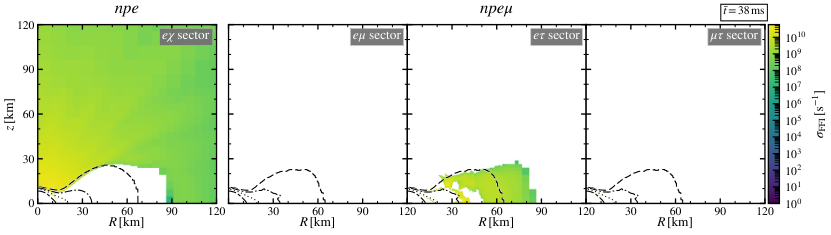
图注：图5：并合后38毫秒，npe物质模型的eχ味对（左）以及npeμ物质模型的eμ、eτ和μτ味对（右）的快速味不稳定增长率σFFI在子午面上的分布。
怎么看这张图：先比较左侧两味近似与右侧三味各通道：新增μ子反应没有让所有通道增强。需结合图6的正负角积分理解抑制原因；附录D表明快速不稳定区域仍对空间与方向分辨率敏感。 核心全局比较及分辨率边界
来源与置信度：arXiv HTML；source verified；https://arxiv.org/html/2610.36486v1/sigma_FFI_comparison.png
图8
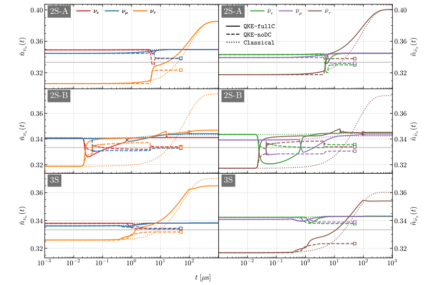
图注：图8：选定位置2S-A、2S-B及3S（从上到下）处，中微子（左列）和反中微子（右列）的归一化数密度份额随时间演化，定义见式30。不同颜色表示不同味；实线、虚线和点线分别表示保留完整碰撞项的QKE-fullC、去掉对角碰撞项的QKE-noDC及经典处理Classical。空心方块标出QKE-noDC的终点，因为这些计算很快达到渐近态。灰色水平线为1/3，对应QKE-noDC计算中的味均分点。
怎么看这张图：分母固定为初始三味总数，完整碰撞允许总数改变。比较同色实线与虚线可见碰撞再填充改变终态；不能把所有曲线与1/3的距离都解释为同一种守恒约束下的均分程度。 直接展示完整碰撞改变局部量子终态
来源与置信度：arXiv HTML；source verified；https://arxiv.org/html/2610.36486v1/Q1.png
强相关工作
本文直接承接Ng等对并合中准确μ子反应及核合成影响的研究，参考文献91提供母三维遗迹；本工作改用角分辨Boltzmann背景，随后作局部量子检验，不能继承母工作的核合成结果当成本次新预测。参考文献87的长寿命遗迹不稳定性研究提供无μ子比较背景，二者不是完全相同物理输入下的单参数重复。
碰撞不稳定性基础可追溯Johns的线性理论（参考文献56），而Liu等2024年的核心塌缩μ子研究（参考文献71）解释为何必须考虑三味。两类天体的反向散射环境和μ子化阶段不同，本文明确指出不能直接照搬超新星的空间形态。参考文献86的子网格模型是方法关联，本文要求碰撞转换与经典源一致更新，而不是已给出通用替代公式。
同一事件 / 同类源线索：
（未提供）
相似工作：
- https://doi.org/10.3847/2041-8213/add324
- https://arxiv.org/abs/2504.20143
- https://doi.org/10.1103/PhysRevD.110.043039
基础理论 / 方法工作：
相反观点 / 张力线索：
（未提供）
相关简报
1. Reconstruction of very inclined air showers with radio data and application to the first GRANDProto300 cosmic-ray candidates
- 来源：arXiv / astro-ph.HE
- 链接：https://arxiv.org/abs/2610.36282
- 作者：Marion Guelfand, Valentin Decoene, Olivier Martineau, Simon Prunet, Sebastian Castro-Isern, Nathan Lebas
- 公告 / 来源日期：2026-10-28
- 阅读层级：相关简报
- 评分：novelty 7/10，importance 8/10，relevance 10/10，final 9.40/10
- 推荐理由：全文核查：ADF与模拟精度沿用既有工作，新增51个ADC级宇宙线候选为调试验证。重要性8保留，创新7为简报；0.07度/15%是模拟性能，非实测总体精度，也非中微子检出。
中文题目：GRAND调试数据重建51个宇宙线候选：方向与能量估计的早期检验
问题、方法与结论：GRAND需要从无线电背景中识别倾斜空气簇射，并重建其来向。作者把已有角分布函数ADF方法用于GP300在2025年7至10月的调试数据：先拟合到时球面，再拟合天线峰值幅度，经过天顶角小于80度、束射范围和拟合质量筛选，从约1.8万个初选事例留下51个宇宙线候选。示例事例能量约2.08×10¹⁸eV，幅度分布呈切伦科夫环增强。
意义与贡献：贡献是把既有模拟方法用于真实自主触发阵列，并展示时间、幅度与地面足迹相容的证据链；它推进仪器调试，不是新中微子事件发现。既有模拟的0.07度角分辨率与小于15%能量分辨率也不能直接当作这51个实测事例的性能。
可借鉴之处：先用到时定位有效发射点，再用幅度约束轴向，提供了几何与辐射形态交叉检查。图1同时保留残差和阵列失效单元，比只展示重建天图更能判断候选可靠性；其他重建方法的能谱一致性可作辅助核对。
局限与关注点：幅度误差7.5%、到时误差5纳秒仍是采用值，未完成探测器定标；原始电压直接代入电场模型使约化卡方偏高。近地平线被切除、候选率低于预期，不能据此推算最终接受度或中微子灵敏度；还需完整响应、背景和能标验证。
图1
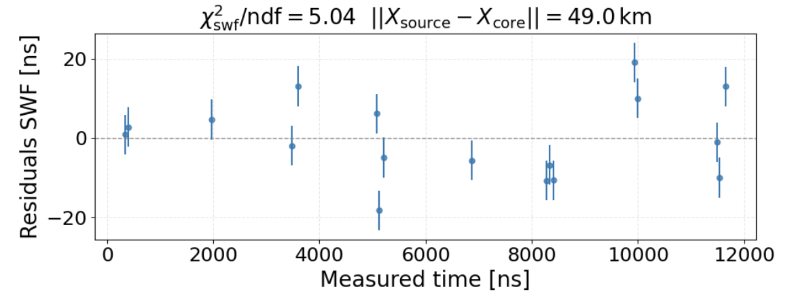
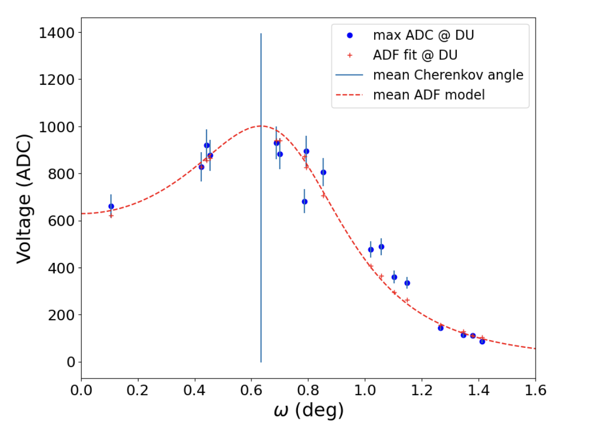
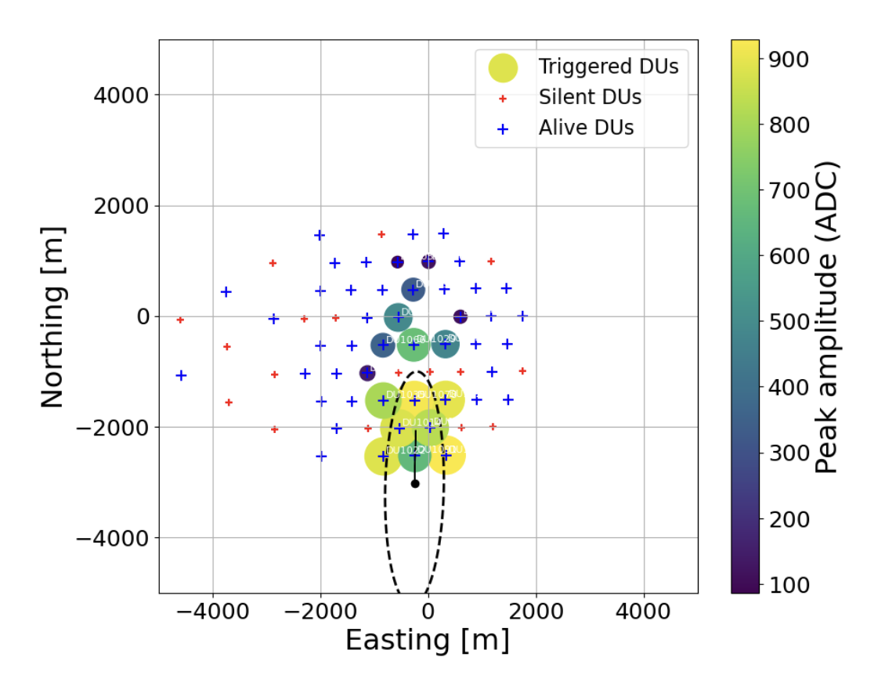
图注：图1：三个面板均为2025年7至10月数据中51个候选之一的同一事例。上：触发天线的球面拟合到时残差，误差棒对应估计的到时不确定度σt=5纳秒。左下：幅度分布，蓝色为测得峰值幅度，红色为ADF模型，幅度误差棒取σA=7.5%；同时给出平均拟合轮廓（红线）和重建切伦科夫角ωc（蓝线）。右下：GP300阵列布局，蓝色和红色分别为工作和未工作探测单元，彩色圆圈标出触发天线，并显示重建芯位和地面足迹。
怎么看这张图：联合观察到时残差、环状幅度增强和拉长的足迹。图中的小拟合误差不包括全部定标与模型系统误差；这是宇宙线候选示例。 直接支持简报核心结果并显示适用边界
来源与置信度：arXiv HTML；source verified；https://arxiv.org/html/2610.36282v1/delayplot_SWF.png；https://arxiv.org/html/2610.36282v1/ADF_fit.png；https://arxiv.org/html/2610.36282v1/CR_footprint.png
2. CROMA: a GPU-accelerated Fokker--Planck solver for modeling non-thermal emission in post-processing cosmological simulations
- 来源：arXiv / astro-ph.HE
- 链接：https://arxiv.org/abs/2610.36074
- 作者：Kosuke Nishiwaki, Claudio Gheller, Gianfranco Brunetti, Katsuaki Asano
- 公告 / 来源日期：2026-10-28
- 阅读层级：相关简报
- 评分：novelty 7/10，importance 7/10，relevance 9/10，final 8.70/10
- 推荐理由：GPU求解含再加速与次级粒子的输运，提高约十倍吞吐，可复用但主要为计算实现。
中文题目：CROMA加速宇宙线谱演化：GPU吞吐量收益依赖示踪粒子彼此独立
问题、方法与结论：星系团磁流体模拟常需对大量示踪粒子后处理宇宙线能谱。CROMA用Chang–Cooper隐式离散求动量Fokker–Planck方程，按子步数分组，在GPU上批量求三对角系统，并用预计算表处理同步辐射和强子次级产物。A100测试中，足够大任务的每卡端到端吞吐量约400条轨迹每秒；四卡节点约1600，对比32核CPU节点约120，节点收益约一个数量级。
意义与贡献：主要贡献是实现与验证可扩展计算，使更密示踪采样和多参数辐射预测可行。它没有提出新的再加速机制，也没有用性能测试证明星系团射电辐射必由某一机制产生。单卡对单CPU进程近百倍与节点约十倍是不同口径。
可借鉴之处：将求解器内核计时与包括读写、系数和辐射的端到端计时分开，能避免夸大加速；按实际冷却子步分桶也是应对不同轨迹工作量差异的实用方法。1至16卡固定每卡50万粒子测试的总耗时变化仅数个百分点。
局限与关注点：模型忽略示踪粒子之间的宇宙线输运及对MHD的反馈，独立性正是扩展效率的前提。小任务利用率较低，128动量格点下每条约32KiB，200万条在64GB卡上溢出。发射表远端指数尾误差增大；DSA注入和在线耦合仍是后续扩展。
图5
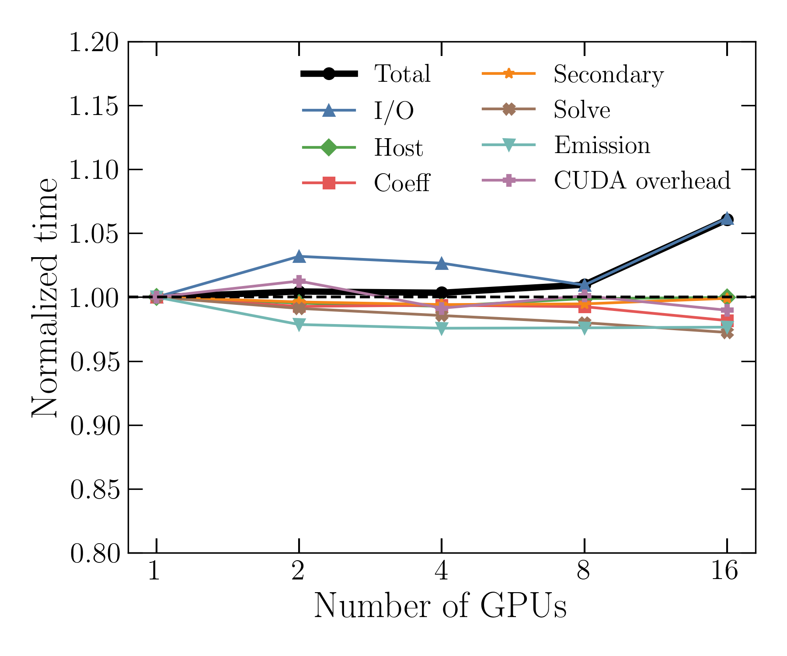
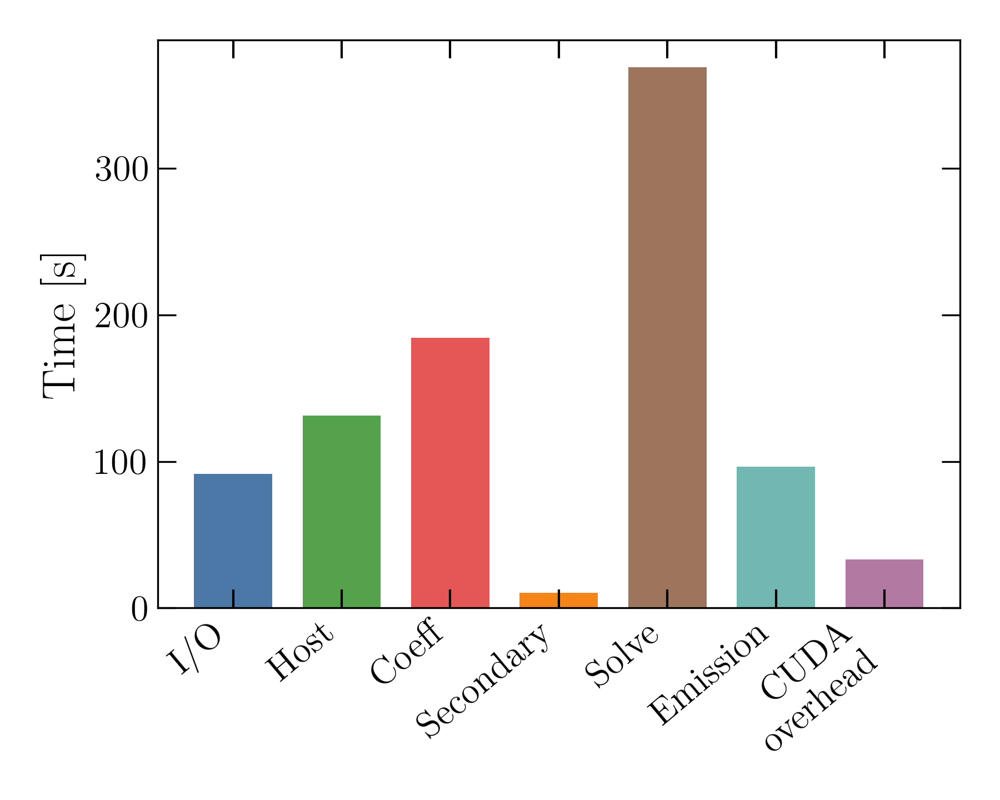
图注：图5：GPU弱扩展测试（左）及耗时分解（右）。左图给出总墙钟时间和各计算部分执行时间随GPU数量的变化；粗黑线表示总墙钟时间，细线表示各过程耗时，并在MPI进程间取平均。每个进程固定使用5×10⁵个示踪粒子。右图给出该弱扩展测试中16块GPU运行的耗时分解。
怎么看这张图：弱扩展时总任务量随卡数一起增加，曲线近水平表示维持每卡工作量后的效率，不等于固定任务获得16倍加速。总耗时还包含读写及主机端工作。 直接支持简报核心结果并显示适用边界
来源与置信度：arXiv HTML；source verified；https://arxiv.org/html/2610.36074v1/gpu_weak_components.png；https://arxiv.org/html/2610.36074v1/gpu_weak_breakdown_ngpu16.png
3. 2:1 Harmonics in the Radio Light Curves of Supermassive Black Hole Binary Candidates
- 来源：arXiv / astro-ph.HE
- 链接：https://arxiv.org/abs/2610.36732
- 作者：A. C. S. Readhead, M. F. Aller, R. D. Blandford, T. Surti, P. V. De la Parra, A. G. Sullivan, P. Mróz, N. Murray
- 公告 / 来源日期：2026-10-28
- 阅读层级：相关简报
- 评分：novelty 7/10，importance 7/10，relevance 9/10，final 8.70/10
- 推荐理由：两个耀变体出现2比1谐波，长期相关噪声下的相干性很有方法参考价值，但非双黑洞确证。
中文题目：三颗耀变体的2∶1周期线索：谐波相干值得追踪，双黑洞尚未确认
问题、方法与结论：作者重新检查OVRO及UMRAO长期射电光变中的三颗双黑洞候选。PKS 2131−021较长周期在以既有周期两倍为先验后得到3481±34天；PKS J0805−0111的1240.7±4.5天信号之外，残差出现2550.0±43.8天成分，接近2∶1。联合拟合允许不同相位，两个成分在后者2020年后同时消失；并非所有候选都呈持续同相谐波。
意义与贡献：新价值是把频率关系、相位和分段拟合改善联合检验，为轨道多普勒调制、低质量伴星扰动或共振体系提出具体约束。作者也纠正旧文把不同假设的p值直接相乘的问题；这些线索仍不能单独确认超大质量双黑洞。
可借鉴之处：值得借鉴的是保留整段光变及信号消失期，检查拟合在各半周期是否共同改善，并比较相同功率谱和流量分布的红噪声模拟。未来独立光谱轨道速度或脉冲星计时阵列证据，才可突破光变解释的退化。
局限与关注点：有效观测只有约2.5至5.5周期，处于红噪声伪周期高风险区。2131的p=8×10⁻⁴针对受限周期窗，旧自由搜索p约0.063；0805的“6σ”是忽略长期相关噪声时的残差比，不是全局发现显著性。不能相乘这些指标或预设TeV波段同相。
图2
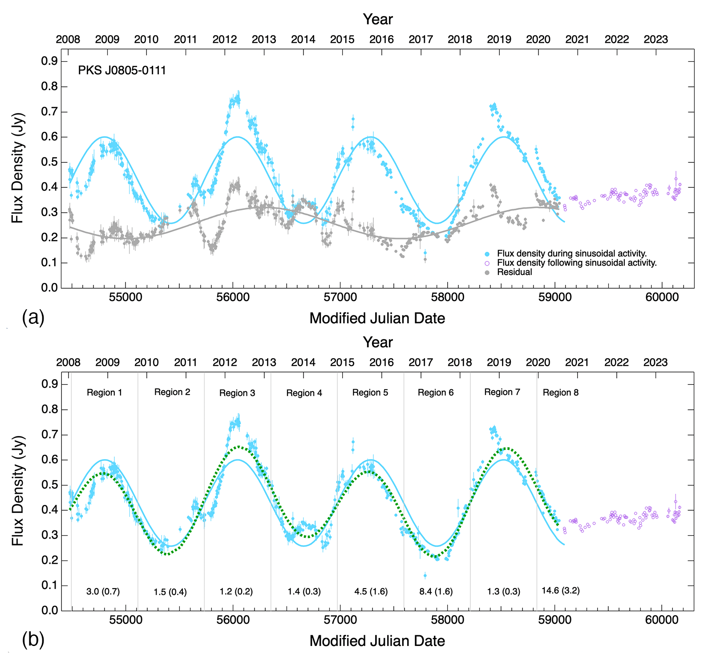
图注：图2：PKS J0805−0111的光变曲线。蓝点为周期信号存在、截至MJD59041的OVRO数据，紫点为周期信号消失后的数据。（a）浅蓝曲线是蓝点的基频拟合；灰点为减去基频后的残差，灰曲线是残差的正弦拟合，即周期2550.0±43.8天的次谐波，其与基频周期的2∶1关系偏差在2.8%以内，见正文。（b）与（a）相同，但绿色点线表示加入次谐波后的拟合，拟合明显改善。浅灰竖线把光变分成基频的半周期区间，每区标出相对于蓝线与绿色点划线的均方根偏差之比，括号内为该比值的不确定度。8个区间的比值均大于1，原文给出p=3.9×10⁻³（2.7σ），表明加入次谐波得到更好、因而更相干的拟合。八区间合并后的均方根偏差比为2.62±0.27，原文称相对1有6σ差异，见正文。
怎么看这张图：图注保留作者的显著性表述；正文明确指出6σ计算没有计入长期红噪声，不能用它宣布双黑洞发现。还要观察紫点中周期结构消失的事实。 直接支持简报核心结果并显示适用边界
来源与置信度：arXiv HTML；source verified；https://arxiv.org/html/2610.36732v1/J0805_light_curves.png
4. Discovery of a New Electron Spectrum Produced by Fast Cooling of Relativistic Electrons
- 来源：arXiv / astro-ph.HE
- 链接：https://arxiv.org/abs/2610.37044
- 作者：Z. Lucas Uhm
- 公告 / 来源日期：2026-10-28
- 阅读层级：相关简报
- 评分：novelty 7/10，importance 7/10，relevance 9/10，final 8.70/10
- 推荐理由：非稳态快冷却解析分布可复用，需核边界/注入条件，不能将稳态假设纠正写成普适新定律。
中文题目：非稳态快冷却电子谱的解析形式：低能端不必遵循负二次幂
问题、方法与结论：常见快冷却近似把注入下限以下电子谱写成负二次幂，但衰减磁场和持续注入会使低能部分偏离稳态。作者沿冷却轨迹推导一个含归一、特征洛伦兹因子和形状指数的谱族，再代入输运方程检查；它在特征能量上方接近负二次幂，下方趋于另一斜率。与一个已有耀变体数值模型在10、30、100天的比较显示，注入下限10³以下拟合接近数值谱。
意义与贡献：该结果为辐射及绝热损失共同作用下的低能电子提供紧凑参数化，有助于理解曲谱，而不是只把观测弯曲归因于加速谱本身。贡献是解析条件与数值例子的联系，本文没有完成实际耀变体或GRB数据的统计拟合。
可借鉴之处：可先用该谱族检验冷却特征能量及低能斜率的变化，再与逐粒子年龄积分比较。注入历史仍通过归一与形状参数进入，不能理解为全部注入信息被消除；特征能量由冷却方程决定也不意味着所有时间演化自由度都可独立选择。
局限与关注点：推导针对单区、注入下限以下无新源项的能段，逆康普顿损失采用Thomson形式。中等Klein–Nishina区不能直接套用；形状指数随时间变化时存在额外导数项，只在缓变等条件下近似。一个数值例子不保证任意注入历史都由此谱族精确覆盖，分层下游与观测光谱尚待研究。
图1
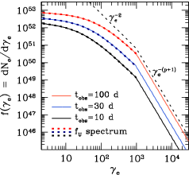
图注：图1：作者的电子谱fU（粗点线）与耀变体电子谱详细数值计算（实线）随观测者时间tobs的比较。实线为参考文献24中的模型[a]；该模型的最低注入洛伦兹因子为γm=10³。
怎么看这张图：比较只在注入下限以下检验冷却群体，三条时刻曲线展示非稳态演化。这里是对数值模型的验证，不能当成对天文观测误差棒的拟合。 原文提供的图像分辨率较低；保留原始图像，未用生成或增强图替代。 直接支持简报核心结果并显示适用边界
来源与置信度：arXiv HTML；source verified；https://arxiv.org/html/2610.37044v1/f1.png
5. $γ$-ray variability of changing-look blazars: FSRQ-like jet behaviour
- 来源：arXiv / astro-ph.HE
- 链接：https://arxiv.org/abs/2610.37303
- 作者：Zahoor Malik, B. van Soelen, Sikandar Akbar, Zahir Shah
- 公告 / 来源日期：2026-10-28
- 阅读层级：相关简报
- 评分：novelty 7/10，importance 7/10，relevance 9/10，final 8.70/10
- 推荐理由：17.9年均一对照及匹配检验区分CLB喷流稀释与吸积切换，具体群体约束但非唯一机制。
中文题目：变脸耀变体的伽马变化更像FSRQ：光学分类改变未必是吸积态转换
问题、方法与结论：作者把有重复光谱支持的111颗变脸耀变体与Fermi普通BL Lac和FSRQ比较，使用17.9年光变的3、7、30天分箱。30天质量筛选后留下64颗变脸源、204颗BL Lac及389颗FSRQ。变脸源的流量分数变化中位数0.483，与FSRQ的0.437接近，高于BL Lac的0.262；多项平均谱与变化诊断也更靠近FSRQ。
意义与贡献：结果支持可变喷流连续谱淹没宽线、从而改变光学分类的解释，削弱把所有变脸源视为正在快速切换吸积态的简单图景。但总体相似不证明每颗源的机制相同，也不约束宇宙学时间尺度的类别演化。
可借鉴之处：研究先区分实际光谱变化与机器分类候选，再按同步峰、亮度和可用时间箱匹配对照，并核验光子指数误差随TS的尺度，减少选择与误差读取造成的假差异。可复用这套样本证据分层和对照设计。
局限与关注点：LCR只覆盖已知变源，BL Lac亮度匹配不完全；没有光学转变时刻，整段指数趋势检验会漏掉短期同步变化。状态持续性依赖阈值，指数—流量差异也仅提示性。未显著检出差异不能证明等价；下一步应结合同时光谱与测光逐源检验连续谱稀释。
图15
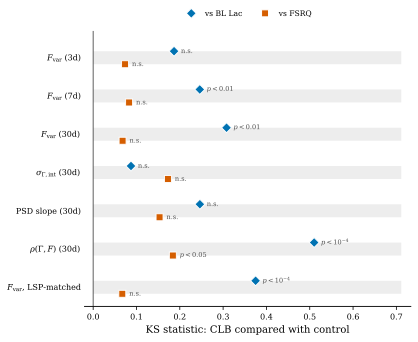
图注：图15：本文各项比较的汇总。每行是一种诊断；蓝菱形表示变脸耀变体样本与BL Lac对照的KS统计量D，橙方形表示与FSRQ对照的D，因此距零的距离衡量差异大小，而不仅是显著性。点旁给出相应概率；在5%水平不显著者标为n.s.，具体概率见前文对应章节。若蓝点明显偏右而橙点接近零，则该诊断下变脸源更像FSRQ，这出现在分数变化幅度各行。谱变化和功率谱两行的两种比较均不显著，无法区分两类对照。光子指数—流量相关是两点都偏离零的一行。
怎么看这张图：先看效应量D，再看概率；不显著不是已证明完全相同。表中的多个诊断和时间分箱使用重叠数据，不能当作彼此独立的发现证据相乘。 直接支持简报核心结果并显示适用边界
来源与置信度：arXiv HTML；source verified；https://arxiv.org/html/2610.37303v1/fig8_summary.svg
6. Weighing dark matter particles with gravitational waves
- 来源：arXiv / astro-ph.HE
- 链接：https://arxiv.org/abs/2610.37638
- 作者：Rodrigo Vicente, Francisco Duque, Theophanes K. Karydas, Gianfranco Bertone
- 公告 / 来源日期：2026-10-28
- 阅读层级：相关简报
- 评分：novelty 8/10，importance 8/10，relevance 7/10，final 8.65/10
- 推荐理由：EMRI波效应同时拟合粒子质量与暗物质尖峰有新探针价值，但为致密尖峰下的LISA预测。
中文题目：用极端质量比旋近区分暗物质密度与粒子质量：LISA条件性预测
问题、方法与结论：暗物质尖峰对旋近轨道施加环境力矩，但力矩大小通常与密度退化。作者利用超轻标量在恒星质量伴星附近的波动散射和吸积，计算随半径变化的力矩并接入相对论波形。对无自旋、准圆轨道的理想LISA注入，探测器系质量20万与18太阳质量、末三年信噪比50且尖峰足够致密时，约10⁻¹³至10⁻¹²eV的粒子质量可得到约一个数量级的双侧约束。
意义与贡献：价值在于利用力矩径向形状而不只总失相量，尝试同时推断微观质量和宏观尖峰。更轻或更重质量进入响应平台后，即便能看到环境效应，也未必能测粒子质量。本文是未来观测能力预测，没有探测暗物质。
可借鉴之处：作者把密度与质量的弯曲退化纳入MCMC，并用重新拟合双星参数后的相位残差快速扫描条件。延长观测不仅提高信噪比，还覆盖更远轨道，提供不能被双星参数轻易吸收的相位形状信息。
局限与关注点：注入没有随机噪声实现，但似然包含LISA噪声功率谱；真实缺测和非高斯噪声未模拟。结果依赖绝热生长及存活的高密度尖峰，忽略旋近对尖峰反馈，限制于无自旋准圆轨道。尖峰形状近似的约5%误差也应与极精密密度后验分开，不能把预测窄区间当全部系统误差。
图2
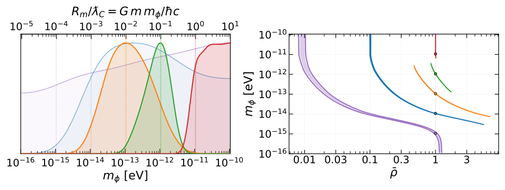
图注：图2：低质量极端质量比旋近系统位于暗物质尖峰中时，对暗物质粒子质量及尖峰归一的约束。左：五个注入粒子质量的边缘后验，虚点线标记注入值。右：平均密度归一ρ̄与粒子质量mφ平面的联合90%可信区域，圆点标记注入值。基准系统探测器系质量M=2×10⁵太阳质量、m=18太阳质量，中心大质量黑洞无自旋且轨道准圆。观测坠入前最后三年，假定信噪比50，对应光度距离2.47Gpc、红移0.43，源系质量分别为1.40×10⁵和12.6太阳质量。尖峰ρ̄=1；依式26，初始尖峰斜率γ=1时对应100pc处密度约1.1×10³GeV/c²/cm³，γ=1.5时对应约5.6GeV/c²/cm³。
怎么看这张图：后验沿密度与质量方向拉长，说明显著退化；双侧质量约束只存在于响应随质量改变的窗口。所有面板都是指定模型下的信号注入预测。 支持核心结果并显示统计或物理边界
来源与置信度：arXiv HTML；source verified；https://arxiv.org/html/2610.37638v1/fig_mphi_rho_sidebyside_newsrc18_mainmode_wavelimit_paper.svg
7. X-ray Emission Study of TeV Blazars
- 来源：arXiv / astro-ph.HE
- 链接：https://arxiv.org/abs/2610.37114
- 作者：Zhihao Ouyang, Hubing Xiao, Shangchun Xie, Jingyu Wu, Xuhong Ye, Junhang Liu, Lili Yang, Marina Manganaro
- 公告 / 来源日期：2026-10-28
- 阅读层级：相关简报
- 评分：novelty 6/10，importance 7/10，relevance 9/10，final 8.40/10
- 推荐理由：85个TeV耀变体X射线汇编可供样本分析，亮度相关非独立轻子机制证明。
中文题目：85颗TeV耀变体的X射线档案：长期变化基线与跨能段相关
问题、方法与结论：作者统一处理截至2024年5月的85颗TeV耀变体X射线档案，筛得9833份Swift-XRT和140份NuSTAR谱，以吸收幂律或对数抛物线拟合。78源软X射线、14源硬X射线达到其变化标准；充分采样源的软X射线流量多偏好对数正态，功率谱斜率多数约1至1.6。高同步峰源多呈越亮越硬，其他类型行为更复杂。
意义与贡献：这是为TeV源多波段研究提供统一长期基线的资料贡献。X射线与TeV平均光度呈正相关，与共同电子群的轻子解释相容；但数据非严格同时，且共有距离及选源效应，不能据此独立排除强子贡献或宣布同区发射。
可借鉴之处：功率谱采用1000条模拟光变逐斜率前向比较，同时匹配流量分布、实际采样，并用百倍长模拟处理红噪声泄漏。对有足够点数的源才估计分布和相关，优于把稀疏曲线的周期图直接解释为物理时间尺度。
局限与关注点：观测偏向亮态和耀发，源间采样差别大；相关p值未等同多重比较后的发现率。谱用Cash统计而曲率选择依F检验，需进一步校准；正文吸收截面在方法与SED段落表述也不一致，复用时应核配置。部分分布拟合即使相对更优仍有很大约化卡方，不能笼统称全部拟合良好。
图8
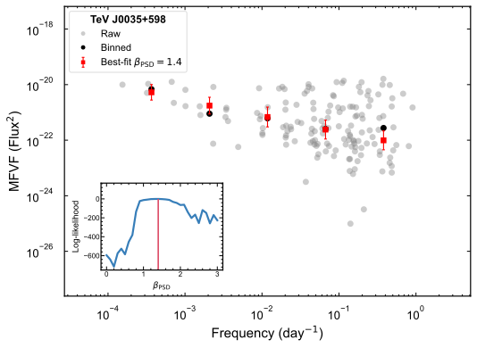
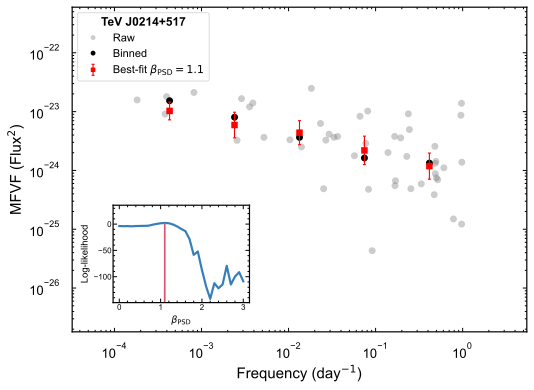
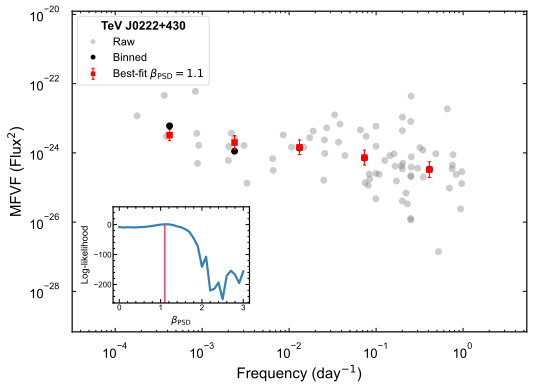
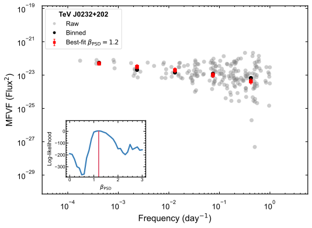
图注：图8：用多片段方差函数MFVF得到TeV耀变体软X射线在不同时间尺度上的变化，只对软X射线光变采样充分的源分析。灰圆为观测原始MFVF，黑圆为分箱后的观测MFVF。红方块是按前向建模得到的最佳PSD斜率生成1000条模拟光变后，各频率箱MFVF的均值；对应不确定度取模拟MFVF分布的标准差。内嵌图给出按式6计算的对数似然随PSD斜率变化，红色竖线标记最佳斜率。这里只显示四个代表源作为示例。
怎么看这张图：红色误差范围是模拟分布散布，不是所有系统学的总误差。该图检验随机变化功率随尺度的趋势，不能把某个方差峰直接称为周期信号。 支持核心结果并显示统计或物理边界
来源与置信度：arXiv HTML；source verified；https://arxiv.org/html/2610.37114v1/TeVJ0035+598_PSD.svg；https://arxiv.org/html/2610.37114v1/TeVJ0214+517_PSD.svg；https://arxiv.org/html/2610.37114v1/TeVJ0222+430_PSD.svg；https://arxiv.org/html/2610.37114v1/TeVJ0232+202_PSD.svg
8. Dynamical constraints on the companion mass from pulsar timing and cyclotron line confirmation in the SFXT IGR J16418-4532
- 来源：arXiv / astro-ph.HE
- 链接：https://arxiv.org/abs/2610.36103
- 作者：Ashwin Devaraj, Rahul Sharma, Ketan Rikame, Biswajit Paul
- 公告 / 来源日期：2026-10-28
- 阅读层级：相关简报
- 评分：novelty 7/10，importance 7/10，relevance 8/10，final 8.35/10
- 推荐理由：轨道校正增强脉冲检出取得SFXT质量函数及回旋线，贡献明确但单源与几何依赖。
中文题目：IGR J16418−4532的轨道计时与约50keV回旋线：伴星约束仍受脉形系统误差影响
问题、方法与结论：作者用2023年NuSTAR、2009年RXTE及约20年Swift-BAT资料研究超巨星快X射线瞬变源。扫描轨道延迟校正并最大化脉冲折叠强度，得到两次投影半长轴的加权值52.7±2.1光秒；结合食几何和洛希瓣，在圆轨道及中子星1.4太阳质量假设下，伴星约12至18太阳质量、13至16太阳半径。NuSTAR三个连续谱模型均需要约50keV吸收特征，支持此前候选回旋线。
意义与贡献：计时和食几何提供有别于光谱型标定的质量限制，回旋线则约束线形成处磁场至数万亿高斯量级。新的动力学范围与旧光谱估计不同，提醒伴星分类和轨道模型系统误差都影响吸积场景。
可借鉴之处：对慢脉冲源，先扫描轨道校正再寻周期可恢复被运动涂抹的相干信号；滑窗脉形图检查校正后最低点是否对齐。谱线在多连续谱下复现，并用NPEX零假设蒙特卡洛检查拟合改善，证据比仅使用普通F检验更具体。
局限与关注点：作者约189万次模拟无一次达到观测改善，报告p小于5.3×10⁻⁷；这是有限模拟分辨率下、指定零模型的界限，不能替代全局搜索及连续谱系统学。耀发和脉形演化会偏置半长轴，质量函数又随其立方变化；形式误差不足以覆盖这些影响，仍需更多轨道和流量状态。
图6
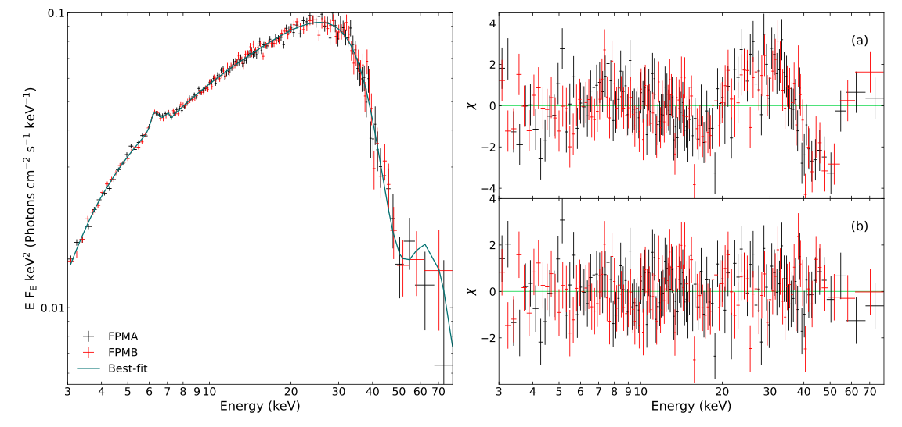
图注：图6：左图为展开后的能谱及NPEX模型最佳拟合，右图为残差。（a）未加入50keV回旋线的拟合；（b）加入50keV处gabs吸收成分后的最佳拟合。红点与黑点分别为FPMA和FPMB数据。
怎么看这张图：比较加入吸收前后的宽残差，并结合不同连续谱的参数表判断稳健性。展开能谱依赖模型，图上的残差改善不自动等于独立于模型的磁场精密测量。 原文图注与图内图例的颜色对应相反；辨认仪器以图内图例为准：黑色FPMA、红色FPMB。 支持核心结果并显示统计或物理边界
来源与置信度：arXiv HTML；source verified；https://arxiv.org/html/2610.36103v1/Spectra-npex-eeuf-res.svg
9. An SRG/eROSITA Study of Be X-ray binaries in Quiescence
- 来源：arXiv / astro-ph.HE
- 链接：https://arxiv.org/abs/2610.37277
- 作者：Ajith Balu, Kinjal Roy, Biswajit Paul
- 公告 / 来源日期：2026-10-28
- 阅读层级：相关简报
- 评分：novelty 7/10，importance 7/10，relevance 8/10，final 8.35/10
- 推荐理由：静宁BeXRB检出和上限约束低吸积率机制，需保留功率律与黑体退化。
中文题目：eROSITA巡天中的静息Be双星：探测与上限共同约束低吸积状态
问题、方法与结论：作者分析eRASS1中17个Be型X射线双星的短曝光谱，分别拟合吸收幂律和黑体，并以MAXI及BAT长光变核对是否处于明显爆发。多数模型无法由低计数谱区分；幂律光子指数约0.5至2，黑体温度约0.8至1.6keV，检测源光度约10³³至10³⁶erg/s。再结合未检出源上限、距离、自转和磁场，讨论普通吸积、冷盘和螺旋桨状态。
意义与贡献：价值在于巡天以较短曝光覆盖附近低亮源，把上限也用于限定可行机制，并与42个既有低态研究统一到相近能段比较。它补充指向观测的覆盖，却不能把“未处于明显爆发”统一称为完全停止吸积。
可借鉴之处：对同参数数目的幂律与黑体，比较Cash统计和AIC，明确只有少数源能区分模型。时间距上次爆发也进入解释，可避免把多年持续的弱吸积随意当成短期壳层冷却；后续可针对上限最有诊断力的近源深观测。
局限与关注点：常见净曝光仅200至600秒，不能开展所需脉冲诊断或可靠拆分多成分。部分磁场直接假定3×10¹²G；上限依赖固定吸收和谱形及能段转换，吸积态分类因此有条件。黑体半径与光度共享拟合归一，其相关不构成独立几何证明；低光度上限也不能单独确认白矮星伴星。
图5
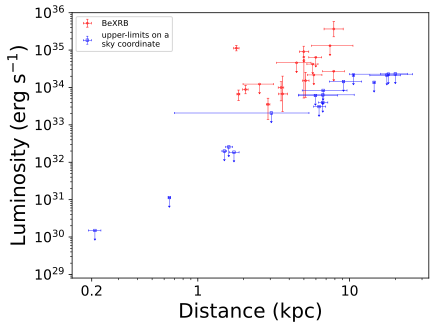
图注：图5：采用吸收幂律模型时，eRASS1中Be型X射线双星的光度随距离的分布。红色为从各源最佳拟合能谱算得的光度，蓝色为在Be型X射线双星坐标处得到的光度上限，方法见参考文献154。
怎么看这张图：红色测量与蓝色上限的统计意义不同。上限采用特定谱形和吸收并换算能段；比较冷盘或螺旋桨阈值时还要核对磁场是否实测以及距离误差。 支持核心结果并显示统计或物理边界
来源与置信度：arXiv HTML；source verified；https://arxiv.org/html/2610.37277v1/0_plot_erosita_dist_v_luminosity.svg
10. Evidence for a nova super-remnant surrounding the recurrent nova V745 Scorpii using eROSITA
- 来源：arXiv / astro-ph.HE
- 链接：https://arxiv.org/abs/2610.37414
- 作者：Michael W. Healy-Kalesh, Sara Saeedi, Manami Sasaki, Matthew J. Darnley, Michael M. Shara, Werner Becker, Martin G. F. Mayer, Federico Zangrandi
- 公告 / 来源日期：2026-10-28
- 阅读层级：相关简报
- 评分：novelty 7/10，importance 7/10，relevance 8/10，final 8.35/10
- 推荐理由：eROSITA新星超遗迹壳与红外空腔和模拟剖面证据相连，关联仍候选而非唯一。
中文题目：V745 Sco周围的X射线壳候选：反复新星喷发关联仍需独立验证
问题、方法与结论：作者在eROSITA图像中识别出以再发新星V745 Sco附近为中心的椭圆弱X射线环，角半轴约19与10角分；若距离等于新星的8.2kpc，对应约90×50pc。红外还有更大的空腔。作者做掩源、平滑和椭圆环测光，并用一维球对称反复喷发模拟探索能否形成类似新星超级遗迹。
意义与贡献：候选为新星长期反馈提供有价值的后续目标，但关联没有直接距离、膨胀运动或光谱证实。随机环试验中16.24%达到更大对比；原文更小的联合概率还引入位置、形态与红外约束假设，不能作为严格全局发现显著性。
可借鉴之处：可借鉴的是把X射线环、红外空腔及多轮喷发模型联系，而非只凭中心位置归属。模拟扫描星际介质密度0.001至10/cm³，达到约84pc外边界所需约220万至6400万年，清楚显示环境退化及固定长期喷发史的重要性。
局限与关注点：全区没有显著净超额，原文全区扩展发射上限与环测光较高光度采用不同口径，需统一背景、曝光和相关环统计后复核。径向形态的15%概率为作者赋值，几何约束也可能与选区相关；射电未检出不能无条件排除暗弱超新星遗迹。下一步应以更深光谱和膨胀信息确认真实性与归属。
图9
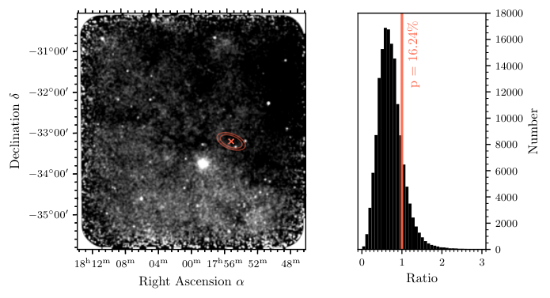
图注：图9：左图为0.5至1.2keV、视场5.6°×5.8°的eROSITA图像，是图1的一个能段分量；红十字标记V745 Sco，红色椭圆环为正文定义的最佳拟合环。右图为在左侧eROSITA数据中155043个位置计算的环比值R的分布直方图，红色水平线标出该最佳拟合环对应值。
怎么看这张图：先看随机环分布，原文有16.24%的环比候选更强。更小联合概率依赖额外条件和概率赋值；本图本身不足以确认新星与壳的物理关联。 原文称水平红线，实际图中为竖线；图注保留原文，位置以图示为准。 支持核心结果并显示统计或物理边界
来源与置信度：arXiv HTML；source verified；https://arxiv.org/html/2610.37414v1/CavityHistogramVaryLocation_large_histogram.png
11. Effects of Dust in Electron-Capture Supernovae: Difficulty in Explaining Intermediate Luminosity Red Transients
- 来源：arXiv / astro-ph.HE
- 链接：https://arxiv.org/abs/2610.37574
- 作者：Yuma Takeichi, Daichi Tsuna, Daichi Hiramatsu, Morgan MacLeod, Masato Sato
- 公告 / 来源日期：2026-10-28
- 阅读层级：相关简报
- 评分：novelty 7/10，importance 7/10，relevance 8/10，final 8.35/10
- 推荐理由：同时拟合尘埃重处理光变和颜色暴露标准ECSN模型困难，对ILRT机制有具体约束。
中文题目：尘埃难以同时修正电子俘获超新星的亮度与颜色：对红色瞬变起源的限制
问题、方法与结论：中等光度红色瞬变比标准电子俘获超新星暗，能否仅靠尘埃遮蔽解释？作者将三个STELLA爆炸光变模型与恒星风、激波相互作用、尘埃毁灭再生及DUSTY不透明度连接，对比SN2008S和NGC300-OT。提高尘埃可压低平台，却加剧平台末端下降；加入约10⁴²erg/s额外激波供能能平滑光变，但匹配亮度的模型晚期B−V往往大于3，明显比观测更红。
意义与贡献：贡献是联合亮度和颜色检验一个退化解释：光变幅度接近不意味着能量重处理的光谱也正确。结果挑战所测试标准爆炸加球对称含碳尘埃的模型，支持进一步研究本征更弱爆炸，但没有据此唯一识别爆炸残骸。
可借鉴之处：模型显式追踪升华边界、复合与颗粒生长时间、散射光行时及红外再辐射。保留激波后幸存外层尘埃后，约60天散射平滑可改善早期，却未消除晚期过红，为后续红外光谱和能量收支检验提供具体方向。
局限与关注点：尘埃假设为无定形碳和固定形式粒径分布，几何球对称，增强星周介质的早期爆发扩散未完整重算。作者提出10⁴⁸至10⁴⁹erg弱爆炸、热核电子俘获等方向属于待检验解释；当前对两个代表源与三个基础模型的比较不是所有非球对称ECSN情景的普遍排除。
图7
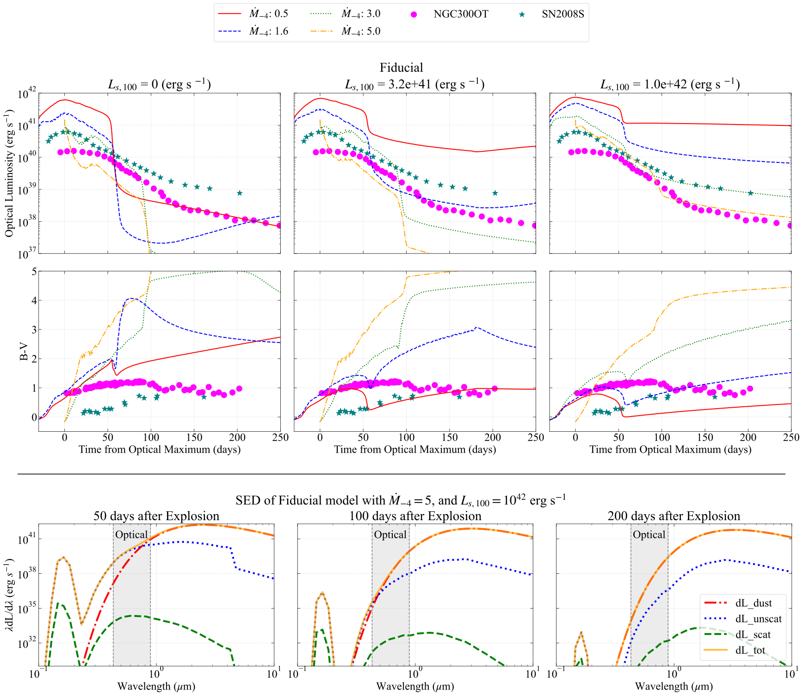
图注：图7：基准电子俘获超新星模型加入额外激波光度后的光度（上排）和B−V颜色（中排）演化。额外激波光度参数Ls,100（式44）分别取0（左，与图6相同的参考模型）、3.2×10⁴¹erg/s（中）及10⁴²erg/s（右）。不同曲线对应不同的质量损失率参数Ṁ−4，数据点为NGC300-OT和SN2008S的观测光度与颜色，资料见参考文献10、23、11。底排显示参数(Ṁ−4,Ls,100)=(5,10⁴²erg/s)模型在爆炸后50、100、200天的SED演化。虽然波长积分的光学光变与观测红色瞬变大致相符，逐渐增强的尘埃再辐射却使灰色阴影标出的光学区SED比观测红得多。
怎么看这张图：应把上排亮度、中排颜色和底排能量分布同时看：右列亮度近似相符仍可能颜色失败。该失败约束所测模型组合，不能直接确定唯一替代爆炸机制。 支持核心结果并显示统计或物理边界
来源与置信度：arXiv HTML；source verified；https://arxiv.org/html/2610.37574v1/7_Ls100_Fiducial.svg
说明
评分由 LLM 给出初评，再由本地阈值策略过滤；IACT、TeV 伽马射线和高能中微子天文学按重点方向处理。